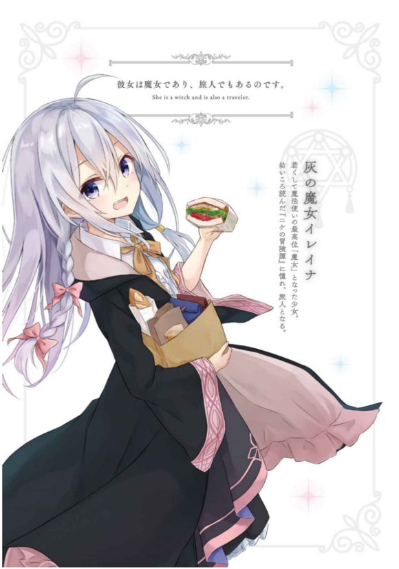
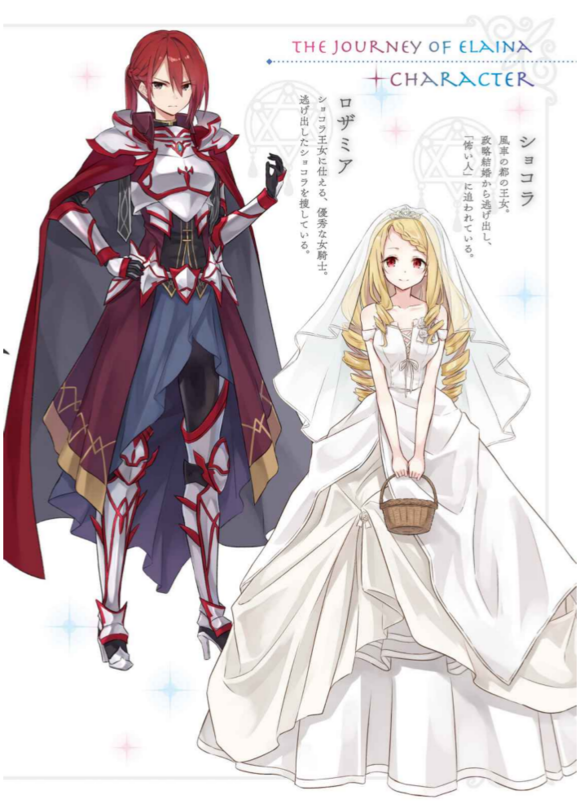
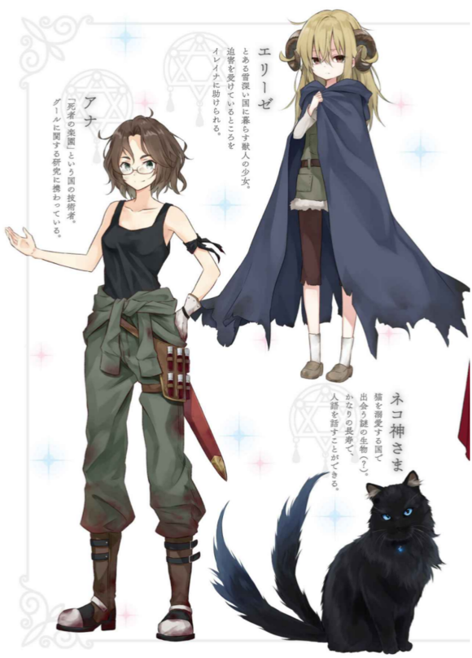
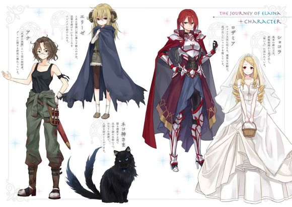
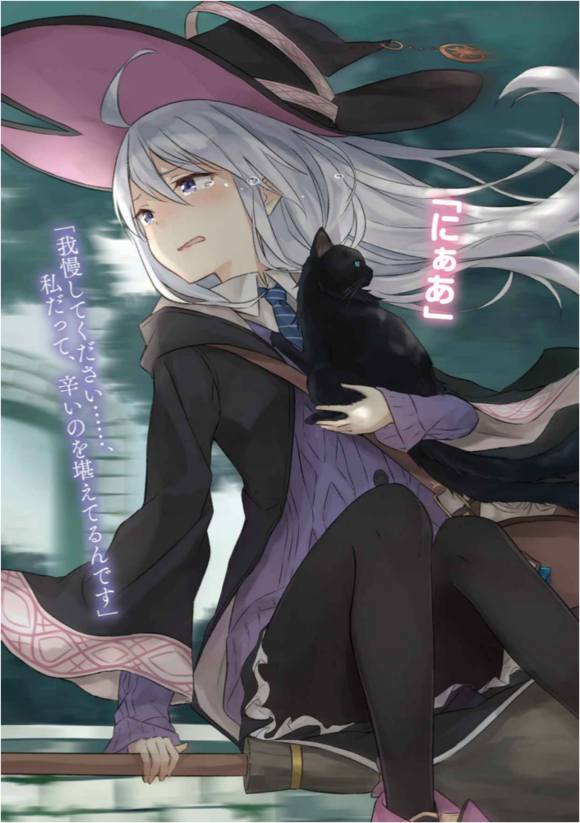
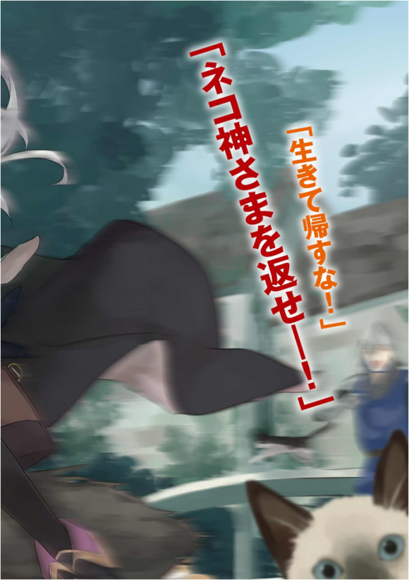
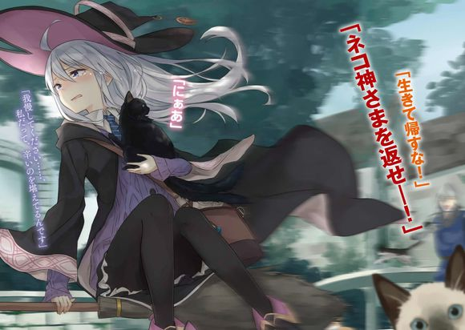

台版 转自 轻之国度
扫图：风
图源：流哲不哼太
录入：养老驴
修图：零食
epub：time无名小卒啊
雨落在春天的平原上。
含蓄而静谧，自天上飘下的雨点淋湿草原上的花草，以及只身伫立于平缓山丘上的树。
「……哎呀，居然真的下雨了。」
那棵树下，一位年轻的魔女抬头仰望灰色的天空。
色调如天上云朵般的发丝光滑柔顺，她穿著黑色长袍、黑色三角帽以及戴著魔女的证明——象徵星辰的胸针。
魔女的身旁立著一柄扫帚，巨大的行李放置在扫帚正下方。
她是魔女，亦是旅人。
「……该怎么办呢？」
伤脑筋。
该前进，还是该站在这里发呆？
少女身为魔女，若是有心并不是不能以魔法弹开雨滴，乘上扫帚继续飞行。
「…………」
然而，在眺望雨景的同时，她丧失了这么做的兴致。
远方，纤细如丝的阳光拨开天上的乌云，如同帷幕一般倾注而下。昏暗的大地受到太阳照耀，顿时闪闪发光。
不停落下的雨点也被阳光点亮，在不断从天空飘落的同时闪耀出光芒。
是太阳雨。
「……就稍微休息一下吧。」
被眼前一片美景夺去目光、醉心沉迷的魔女是谁？
没错，就是我。
阳光从云隙间流泄而下，使亮处犹如斑点般洒落平原之上。阳光照射下的花草受到微风吹拂，纷纷挥落身上的雨滴。
每当经过那道光芒，身体便仅仅一瞬包围在温暖的空气中。
啊啊，真温暖。这么想的瞬间，我又再度回到阴天之下。真希望阳光能一直跟著我。不知不觉间，明亮的大地已然远离到遥不可及之处。
雨停了不久，但是空气依然不减潮湿，暗藏著一股寒意。
给人一股乌云随时都会遮掩所有的阳光并再次拋下冰冷雨点的预感。
「…………」
我讨厌雨这种天气。潮湿阴暗，光是身在雨中就令人心情沉闷，更别说它每每逼迫我暂时停下旅途，实在烦死人。不过我最喜欢等雨停了之后，啪哒啪哒地踩水洼了。讨厌下雨却喜欢放晴，这种感觉十分复杂，还真是令人烦恼。
然而既然下雨的气息越来越浓厚，我就得加紧脚步了呢。我就这样心怀些许的焦急，乘著扫帚飞翔。
在那之后又飞了一阵，我才看到国家。
我令扫帚在门前降落，卫兵很快就出现了。
稀奇的是卫兵的穿著并不是士兵的装扮，而是三角帽与长袍。
「欢迎来到我们的国家，请问您是魔女大人吗？」
用眼睛看不就知道了。
「是的，我是正在旅行的魔女。」
「哈哈，是这样吗。您身为魔女大人还真年轻呢。」卫兵这么说著感叹地点头，接著才继续说道：「恕我无礼，请问大名？」
「伊蕾娜。」
「伊蕾娜大人，原来如此。恕我无礼，请问您有情人吗？」
「什么？」
我不禁直接反问。在这种时候突然跟我搭讪？
但是看来这个问题另有目的。
卫兵轻轻摇了摇头。
「失礼了，我会这么问并非怀有非分之想。只不过，若是您的情人是魔法师以下的人，滞留本国将会有不愉快的感受。」
「……？」
「那么，敢问您的回答？您现在有固定交往的对象吗？」
感觉有点难以释怀，不过只要入境就明白了吧……应该。
「……不。那个，我没有。」
听完卫兵点了点头。
「原来如此——那么，请进。」
说完，他从门前退开。
接著沉重的钢铁大门发出震动地面的低沉声响，缓缓敞开。
「欢迎来到魔法师至上之国。」
我踏步向前，卫兵便深深鞠躬对我这么说。
○
穿过门，眼前出现的是城镇中的大街。大小样貌不尽相同的民宅与店铺在街道两旁并排而立。
街景中随处可见魔法师的身影。他们与同伴并肩漫步、购物采买。转头看向并排的店面，我看到魔法师们极其自然地生活在这里。
话虽如此，这里也有并非魔法师的一般人。他们垂头丧气地走在路边，快跟魔法师撞上时便主动侧身闪避——过著过度谦卑的生活。
他们身上的服装也格外破旧，看来在这个国家中只有穿著高级长袍的人，或是身穿便宜布料的人而已。
这里还真是个与众不同的国家呢——我一面这么想，一面迈开步伐。
接著，走了一阵子后，我停下脚步。
眼前出现一个奇怪的东西。
「……那是什么？」
这是我开口说出的第一句话。
从没见过的神秘大箱子沿著铺在地上的铁棒行驶。更让人讶异的是，大箱子里塞满了人。箱子在眼前停下时，我才了解到那好像是某种交通工具。门一打开，人群就如同雪崩般涌出，取而代之，将新一批人吸了进去。
看样子不少人将这作为交通方法呢。真有趣。
看起来好像很好玩。
要搭搭看吗？
来搭搭看吧。
虽然不太清楚状况，我还是乘著这股兴致向前走，一面闪避人群、一面逆流而上靠近大箱子。
然而，想要搭上箱子的我却无法如愿——在走进箱子的前一刻，我被拦了下来。
「不行喔。」
这一声传来。
「恶欸！」
我发出怪声。某个人从背后一把揪住了我的长袍。
突然给我搞什么啊浑蛋——心里这么想的我怒气冲冲地带著杀气转过头，看到眼前站著一位魔女。
那是个脸上挂著可疑笑容的古怪魔女。
「你做什么？」
「你是魔法师对不对？最前面的车厢不可以搭。你不能搭。」她无视敌意外漏的我，滔滔不绝地说：「你应该坐那边的车厢。」
边说，魔女边指向与我想搭上的东西……相连在后面的车厢。
然而——
「……不管怎么看上面都没人的说。」
「是呀，因为没有人搭。可是这是有原因的，所以你过来这边搭吧。」
「换作这边我就能搭了吗？」
「是呀，当然——原因我之后再跟你解释。所以来吧，快点，跟我来。」
「……喔。」
真是莫名其妙。
○
一问之下我才知道，这位魔女是发明移动箱子——好像是叫做「列车」的交通工具—的发明家。
我问她这究竟是用什么原理移动的，她便喜不自禁地向我解释。
不过，她说的话我可以说是一句也听不懂。
毫不留情淹没在专有名词大浪中的我脑袋差点烧坏，勉强听懂的部分只有「这个列车以魔力为动力来源」这点，除此之外我全不明白。
可是我想就算不懂也没关系。
「现在呀，我正在对第一次搭乘这个列车的魔法师进行访问调查。」
「是喔，这样啊。」
我坐在设置于列车中很长很长的沙发上，伸直双腿随便应声。
「旅人小姐，搭起来还舒适吗？」
「很安静呢。」
窗外流逝的街景平凡无奇。箱子看起来虽然很了不起，但速度却意外地平稳，感觉比用扫帚飞行还慢。
也因如此，列车中极为安静，搭起来感觉也许不坏。
「就是说吧，就是说吧。这个呀，是我为了一面观赏美丽的情境与有趣的事物，一面游览大街开发的自信之作。」
「是喔。」
「可是魔法师的评价都不怎么样呢……当初发表时有很多魔法师搭乘，可是不知不觉间就没有人搭了。」
「我想也是。」
谁叫这个这么慢。
「顺带一提，你是今天第一位客人。欢迎搭乘我的列车。」
「第一位……？」
听不懂她在说什么的我倾身探出窗外。看向列车的行进方向，我看见塞满人的车厢。
明明那么多人，我却是第一个？
究竟为什么？
「哎呀。」她跟随我的视线看去，说：「前面车厢里载的不是客人，不用在意。」
「不用在意……你这么说反而让我更好奇。如果不是客人，那他们究竟是什么？」
听了我的话她说：
「嗯？次等人（亚尼玛）呀？他们不是人，所以不算客人。」
「…………」
「你是从国外来的，所以可能不太清楚——可是在这个国家，不会魔法的人不是人，跟动物一样。」
「……这个说法还真过分呢。」
只不过是不会使用魔法就当作动物看待吗？
她看向前方的车厢说：
「你看，你不觉得他们很可悲吗？跟魔法师不一样，没有别的交通方式，所以全都抢著搭我的列车。看起来真好笑。」
「……我不觉得哪里好笑的说。」
「是吗？但是这个列车刚做好的时候可是大受欢迎喔。让次等人（亚尼玛）坐在前面的车厢，我们则是坐在这个车厢看好戏——然后指著他们凄惨的样子大笑。据说可以发泄每天累积的压力，大受好评喔。」
「次等人（亚尼玛）吗……」
以前，我曾在书上看过这个词。我记得这应该是魔法师用以称呼人类的歧视用语才对，没想到真的有国家在用这个词汇，真是令我大吃一惊。
「可惜流行难免会消退呢。到了现在，客人就只剩从国外来的你一个而已。」
「……我想也是。」
「你觉得要怎么做才能让人回来搭这个列车呢？果然还是需要点新的刺激吗？」
「要不要乾脆除去所有的刺激？」
「这么一来这个列车就会失去存在意义了呀。」
「…………」
「所以说，你有什么好方法吗？」
「没有耶。」
「这个回答听起来很无所谓呢。」
「也是，我是真的无所谓。」
「别这么说嘛，我想要新的点子。这样下去这个列车一定会被撤走。」
「点子吗……」
我没有什么特别的主意。
「你有没有什么想法？搭乘这个列车的感想也没关系。」
「……啊，感想的话我有。」
「是什么？」
该回答什么我早已心里有数。
我将视线从平凡无奇而索然无味的景色转到露出肤浅微笑的魔女身上——接著，斩钉截铁地回答。
这是我老实而直接的感想。
我说：
「很不愉快。」
但是她却没有露出特别在意的模样，只说了句「原来如此……很不愉快吗？」便陷入沉思。
○
隔天开始下起豪雨。
我迟迟无法离开，只好暂时在旅馆中生活。哎呦喂呀，虽然说是便宜旅馆，想在这里生活也不是办不到呢。
只不过无所事事地在潮湿空气中消磨的日子比想像中还要枯燥乏味，甚至让我担心自己会不会发霉。
结果……
一连等了好几天雨势都没有停止的迹象，我终于决定在雨中离开这个国家。
在不停落下、我最讨厌的雨中，我撑著伞走在通往国境大门的路上。突然，有列车缓缓从我身旁经过。
速度只比我的步调稍快一点的列车在我前方不远处停了下来。
「唔唔唔？」
接著，列车上的门打开，从中吐出一大群人时——
「哎呀，这不是之前的魔女小姐吗？你好，今天天气真好。」
我遇到了那个发明家魔女。
「这叫好天气吗？」
「当然好啦。我的列车正在大展身手，这不叫好天气叫什么呢？」
「看来我跟你价值观不合呢。」先不提这个。「不过生意看起来的确不错呢，之前几乎不搭的客人好像都回来了。」
我瞄了一眼她背后这么说。
她的背后满满都是魔法师。从列车上下来的人、搭上列车的人，全部都是魔法师。
她追随我的视线，用力点了一下头。
「是呀！都多亏有魔女小姐，魔法师们都回来了！」
「我吗？」
我究竟做了什么？
我虽然有向她抱怨，却完全没有受她道谢的道理。究竟怎么了？
我在伞下发出疑问，她便说：
「你说得没错，只要排除了让人不愉快的东西，客人就一个接著一个回来了！」
她边说边从我眼前退开。
「你看，我废除了次等人（亚尼玛）专用车厢，把车厢全变成魔法师专用车厢了！」
说完她莞尔一笑。
「…………」
前方的车厢也都是魔法师。
最前面车厢也好、其他的车厢也罢，全都被魔法师们占满。
「果然，让次等人（亚尼玛）跟我们一起搭列车实在是太超过了对吧？难怪会这么不愉快。我一直没有发现这个盲点。谢谢你，魔女小姐。」
「…………」
「现在我的列车可是大获好评喔。能搭著列车，指著走在雨中全身湿透的次等人（亚尼玛）大笑，可以纡解每天累积的压力。」
「……这样啊。」
从列车上走下的魔法师们撑著伞在大街上散开。一跟衣衫褴褛用破布代替伞挡雨的人、或是低头抱著行李奔跑的人擦身而过，魔法师们便指著他们讪笑，溶入街景之中。
「魔女小姐也来吧？你不想坐在列车里观赏那群可悲的动物吗？」
我摇了摇头。
「我没有那么恶劣的兴趣。」
「哎呀真可惜，看来我们兴趣不合呢。」
听了这句话，我又摇了摇头。
我叹了口气，抬头望向最讨厌的雨，接著这么说：
「是价值观不合。」
跟这个国家，也跟你。
「咦？喔……你们希望我把长枪跟盾牌变成最强，是吗……」
「就是这样！要不咱们会给东村那群家伙杀光啊！」
聚集在我面前屈膝跪地的男性村民们抬头看著我露出拚命的表情。
将小刀绑在木棒上的破长枪，以及无法替食物保温的破锅盖，宛如垃圾般杂乱地在他们身旁堆积成一座小山。
要我把这个变成最强？原来如此。
「不是，这有点困难……」
「求求你帮帮忙！咱们听说东村那群家伙跟魔女要了最强的武器！这样下去咱们会给杀光光的！」
虽然听不太懂，但是看来这个西村跟邻近的东村相处得颇不融洽。而且，最近还发展成「喔？那么就乾脆用武力解决啊？」的紧张情势。
只不过，用现成凑合的武器实在打不起来，无可奈何只好请魔女替他们提升武力。
而我则是不巧在这时遇到了他们。
这就是整件事的来龙去脉。
「嗯……不过，如果只是把武器变强，倒也不是不可能喔。」
「不是变强！是变成最强！」
听了看似领袖的人这么一吼，围绕在四周的数十个男人们一同喘著大气点头。讨厌，汗臭味好重。
「把武器变成最强很简单——可是有一个问题。」
「啥问题？」
「你们付得起吗？我不是不能变给你们，可是很贵喔？」
「去对面的魔女可是免费帮他们变啊！那么咱们也——」
「还是要当作没这回事呢？」
「…………」
「怎么办？」
「……具、具体来说要多少钱？」
「…………」
我陷入沉默竖起一只食指。
「什么！居然只要一枚铜币就好！实在是有够便宜啊！」
「强化武器酌收一枚金币。」
「一枚金币就愿意帮咱们全部做好吗！还是有够便宜啊！」
「一件武器一枚金币。」
「一点都不便宜……」
「我不是说过很贵了吗……」
从那堆垃圾山估算，光是强化武器大概就能进帐八十枚金币吧……哎呀，垃圾山突然变成宝山了呢。嗯呵呵。
然而，不出所料，既然是只凑得出这种武装的村落，在经济上想必也很不充裕。我看见绝望在我周围双膝跪地的男人间扩散。
「求、求求你算咱们便宜一点，魔女大人……」
「哎呀～这已经是最便宜了耶。」
「……对、对了！既然如此，请让咱们事后付款！魔女大人把咱们的武器变成最强，咱们再去东村抢钱给你怎样！」
「啊，抱歉。强化武器时不接受事后付款。」
「……为啥？」
「会影响我的工作意愿。」
「可是，咱们又没钱，先付实在是……」苦恼了一阵，看似领袖的人说：「不能用东西代替吗？」
「要看是什么东西呢。」
「真的假的！水啦你们几个！把那个拿来！」
嘿！一声精神抖擞的回答，看似小弟的人们就这样在我眼前解散。
接著，他们拿了那个回来。
一群人在等著的我面前恭恭敬敬地摆好大量的蔬菜，数量多到我一个人拿不完。有这么多蔬菜，光吃这些似乎能活上一个月。
「这是村里种的各种蔬菜！请你笑纳！」
「……不是，你就算拿这么多菜给我，我也不知道要怎么办。」我只能想见在路途上放到坏掉的未来。
「请你笑纳！」
「…………」我叹了口气。「还是当作没这回事吧。既然你们付不出钱，又只拿得出这点东西，我也没有义务替你们强化武器。」
「——请您稍等，魔女大人。」
在我一口回绝的同时，看似领袖的人的太太从旁插嘴道。
她以冰冷的眼神望向因绝望而消沉的男人们说：
「我们为了魔女大人特别准备了宴席，能请您代为这次的酬劳收下吗？」
「喔？」
「什么时候……！真不愧是俺老婆！」看似领袖的人得意地说。
「…………」她狠瞪他一眼，随后对我微笑。「您意下如何呢，魔女大人？」
我回说：
「要看是什么菜色呢。」
总之先去看看状况也好。我抱著这种想法在太太的带领下来到了村子里的集会场。那是栋外观相当破旧而简陋的建筑，甚至令人怀疑里面安不安全。
但是太太不放过我，「来吧请进。」她如此说著，半强迫地把我拖进屋内。
「…………」
而说到里面究竟如何——
里头摆出了相当丰盛的宴席。新鲜现采的蔬菜水果陈列在桌上，香喷喷的气味充满整栋建筑。现在好像还在准备，许多太太们匆忙地在会场中来回走动。
为了让破旧的建筑看起来像样一点，室内的墙壁藏在布幔之后。布幔恐怕是各个太太从自己家里带来的窗帘，花纹与布料参差不齐，不遗余力的努力令人为之动容。
但是，只有一个缺点。
由于锅子上没有锅盖，动作不快点的话，难得烹调的料理就要冷掉了。甚至有些菜肴在我抵达之前就凉了。怎么会这样？
正因如此，事态刻不容缓。
「我立刻为你们强化武器吧。」
回到男人们身边的我立即动工。
我拋下欢欣鼓舞的村民们，取出魔杖朝破烂武器堆成的垃圾山使出魔法。
效果立即显现。一闪一闪的柔和光芒包围武器，改变武器的形状。
在光芒完全消失时，破旧的武器获得了崭新的面貌。
「这……这是！太猛啦魔女大人！」
焕然一新的武器使众男人们感动不已。
绑上小刀的棍子变为枪尖如冰一般美丽的长枪。平凡无奇的锅盖则是进化为外表看似能将敌人击溃的凶恶盾牌。
没错。
垃圾山变成了宝山，会这么感动也在所难免。
「顺带一提，亲手拿过就会知道，武器比外表看起来还轻还坚固。但是有一个缺点——」
「赞啦这样咱们就赢啦啊啊啊啊啊啊啊啊啊！」
啊，他们根本没在听。
「那个——」
「大伙儿！咱们马上就去给东村的那群家伙好看！跟俺一起上！」
接著他们拿起武器——
「那个……」
「武器赶快拿好！不要白费了魔女大人的好意！」
站到村子口——
「…………」
「魔女大人！感谢你！咱们一定会赢！」
跟我行了一礼后，朝东村急奔而去。
「…………」
我一个人被拋在原地。
这个进展出乎意料之外。
「嗯……」
都拿了最强的长枪和盾牌，真希望他们的行动能更谨慎一点。
这样下去他们很有可能会用错方法。该不该去阻止他们？
真伤脑筋。
「魔女大人，会场准备好啰。」
「啊，我现在就去。」
还是算了吧。
接下来就算不理他们，应该也会如意料之中发展吧。
○
「魔女大人，这次真的十分谢谢您。这下村子就和平了。」
「哪里哪里，我又没做什么。」
我边将料理舀上盘子边摇头。真要说我做了什么，其实只不过是对武器动点手脚而已。
这点小事不足挂齿。
「那么，这是谢礼。」
说完，看似领袖的人的太太将一包东西递给我。
「谢谢。」
「里面装了十枚金币，一并包含了的费用。」
瞄了里头一眼，里面确实装著十枚金光闪闪的硬币。嗯呵呵。
我脱下三角帽，行了一礼。
「谢谢你们。」
「该道谢的是我们才对。这下两个村子就终于能回归和平了。」
「就是说呢。」
「来，请您享用吧。」
「也是——毕竟时间不多了。」
就是因为这样，我才想先跟他们解释清楚再来这里的说。
不过，算了吧。
我拿起刀叉，优雅地开动。
在那之后过了一会儿，村民们才回到村子里——碰巧是我离开村子的集会场，乘上扫帚的时候。
男人们带著和离开村里时明显不同的表情归来。
一群人手上不见长枪盾牌，还以多了快一倍的人数，抬头望向坐在扫帚上摇晃双脚的我大骂：
「魔女大人，这是怎么一回事！」「长枪跟盾牌都只用一次就坏了啊！」「开什么玩笑！这是诈欺！」「把钱还来！」「把我们的小刀锅盖还来！」「还有棍子也还来！」「怎么会这样！解释清楚啊！」
哎呀哎呀。
「我依照你们的要求，给了你们最强的武器。你们还有什么不满吗？」
「何止不满！一打起来咱们才发现，东村的家伙用的武器跟咱们一样啊！」这个村子的领袖大叫。
「你骗了咱们吗，魔女大人！看起来这么漂亮结果根本不堪用啊！长枪跟盾牌相撞的时候两边都碎掉了啊！」
哎呀，真糟糕。
「哎呀～越坚固的东西就越脆弱呀，宝石不也是这样吗？」我这么说：「而且，最强的长枪跟最强的盾牌相撞，当然两边都会碎掉。因为两边都是最强呀。」
我胡诌一番，这个村子的领袖就说：
「可是魔女大人，你根本没说武器这么脆弱啊！」
「我有，只不过是你们等不及我解释，自己跑掉了而已。」
我原本想跟两个村子解释武器很脆弱之后再引导两边决战，但是他们匆忙离开，再加上我得趁热品尝料理，就变成了这样。这样是谁该负责？
「话说魔女大人，给东村最强武器的魔女就是你吧！」
「奇怪？我难道没说吗？」
的确，我前些日子也在和这里对立的东村，以相同的手法将他们原本是垃圾的武器变成最强。
不过，这件事就先摆一边。
「我现在完美达成了你们委托于我的工作，也确实收下了酬劳，所以我要走了。」
我缓缓骑著扫帚向前。
从下方传来的谩骂越来越大声，甚至有人朝我丢石头。当然没有打中。
「那么再见了～」
实际上——
我接受的根本不是什么「把武器变成最强」这种危险的工作。不如说，这只不过是原本接受的工作中的步骤之一。
实话实说，我接受的委托是「除去两个村子里处不好的男人们手中的武器」。
如是，我就用魔法拿走了他们的武器。
由于获得了共通的敌人，两个村子的关系应该会比过去更好才对，真是一石二鸟呢。不过代价就是他们失去了金钱、小刀与锅盖。
但只要将这些视为以和平的方式终结纷争的代价，就应该相当划算才对。
渐渐远去的人群仍旧不停高声抱怨。
而在他们后头，我隐约看见两个村子的委托人在集会场旁向我挥手。
秋天的森林落叶纷飞。染成鲜红的叶片轻柔缓慢地翩翩飞舞、落下，染红某条连系国与国之间的道路。
一个少女走在宛如铺了红色绒毯的路上。
她穿著黑色长袍、头戴黑色三角帽、胸口别著象徵星辰的胸针。由于季节寒冷，她纤细的脚上穿著黑色的裤袜。
装扮怎么看都像是魔女的她是魔女，也是旅人。
「……呼。」
她停下脚步，仰望天空。眼前是一片清澈的蓝天。
眼神略带忧愁茫然止步的她，在任何人的眼中都是位美少女。这里若是有人经过，甚至会被她美到当场昏厥的地步。无论对方是男是女，恐怕都会沦为她的俘虏吧。这就是无差别恐怖攻击吗？
具有这等致命美貌的她究竟是谁？
没错，就是我。
「…………」
啊，开玩笑的喔。
○
平常在国与国之间移动时，我会跟魔女一样骑乘扫帚飞翔，但是今天我并没有这么做。
这条道路景观如此优美，在扫帚上走马看花实在是太可惜了。
不过另一方面是因为天气太冷，所以不想骑著吹风。
「…………」
而且，上回造访的国家——我记得叫做水车之都。从那里前往下一个国家，只要走这条路立刻就能抵达。
应该就快看到下一个国家的身影了吧。
我记得，下一个国家是——
「……哎呀？」
我的思考在此中断。接著回过神来，我发现自己甚至当场驻足。
有人影从这条道路的另一头接近。
是个骑在马上的男人。他让马悠悠漫步，在路的正中间从容不迫地前进。
男子查觉到我的视线，对我微笑。他是个金发碧眼，身穿昂贵服饰，外表善良的青年。
他如果只是个长相帅气的平凡男子，我也不必刻意停下思考与脚步盯著他看。顶多只会把他当作风景中的一幕，与他点头行礼后便擦身而过。
「嗨，你好。今天天气真好——这样打招呼好像有点无聊呢。」
但是在我面前停下马的他，怎么看都是那个人。
与其说是那个人，显然就是——
「王子殿下？」
他本人。
王子脸上挂著沉稳的微笑点头道：「哎呀，你认识我吗？」
「我在水车之都见过您胸口的徽章。」
「原来是这样——嗯，你说得没错，我就是水车之都的王子，名字叫做罗伯特。初次见面，魔女大人。」
他放开一只握住缰绳的手，朝我伸来。
是在说「来握手」吧，原来如此。
我握住他的手，说了声「您好」后，又放开他的手。
「不过，会在这里相遇，代表你正从水车之都前往风车之都对不对？」
「是啊，没错。」我颔首回应。
这条路是连接国与国的唯一一条道路，也是连接我前天滞留的水车之都，以及接下来即将前往的风车之都两国的贸易要道。
「我的国家还好玩吗？」
「有很多水车。」
「…………」
「…………」
「……咦？难道就这样？」
「是的，嗯。」
毕竟没发生什么值得一提的事情。
「是、是吗……只有这样啊……」
我假装没看到他失落的模样，这么问：「话说回来，罗伯特王子。您会跟我擦身而过，代表王子殿下正从风车之都返回水车之都吗？」
「咦？啊啊……不，有点不一样。」
「？那么是？」
「我在找我的未婚妻。」
原来如此。
「我是旅人，所以没办法结婚喔。」
「你在说什么啊……」罗伯特王子显然十分傻眼。「我的未婚妻不见了。」
「不见了……是吗？」
不是逃跑了吗？
罗伯特王子点头说：
「其实我预定即将结婚，不过对方是风车之都的公主，所以为了在水车之都举办婚礼，必须将她接回国内。」
「原来如此。」
对方是邻国的公主啊，真了不起。
「话虽如此，对面似乎有人不赞成我们的婚姻。我今天早上抵达风车之都时，她正在被迫跟别人举行婚礼。」
「…………」
他皱起端正的脸庞，说：「那时她哭了。跟不情愿的人结婚，她想必十分痛苦吧。所以我拋弃了身为王子的立场，硬是将她带走。」
「是喔……」
真是浪漫非凡的进展。
「离开风车之都时，我将她放在马拉的货车上，奔向水车之都。」
「货车。」
当她是货物吗？
「但是我在半路回头一看，她却不见了。一起离开风车之都时，她明明在货斗上吃著可颂面包的说。」
「难道不是掉下来了吗？」
「是啊……所以我现在正在找她。」
「原来如此。」
是被掳走了、还是发生意外、又或者是逃跑了。会是哪个呢？听王子的说法，很有可能是因为意外，一不小心拋下了公主坐的货车。
但现阶段还很难说。
「风车之都的公主——她是个有著卷卷的金发，以及熊熊燃烧红色双眼的美女……你有看到她吗？」
「我从水车之都一路走来这里，可是王子殿下是我第一个遇到的人。」
我实话实说。
他寂寞地微微皱眉。
「……是吗。」
接著这么说。
不过，我总有种背后暗藏玄机的预感。与邻国公主结婚的背后一定有什么内幕。
比如说，是为了联系两国的政治联姻之类的。
「您跟公主是在哪里认识的呢？」
我刻意兜了个圈子问。
「嗯？战争结束十周年的纪念派对上，我对她一见钟情。」
「喔喔，战争结束啊。这样啊这样啊，水车之都跟风车之都间曾有过战争吗？原来如此。」
果然是政治联姻吗？
「不过那已经是超过十年之前的事了。风车与水车对彼此相邻却相似的存在看不顺眼，最后演变成了战争。」
「明明彼此相似吗？」
「『正是因为相似』才对。身旁一直有个跟自己很像的人很不舒服吧？以此为起因，两国常为一点小事冲突，最后演变成战争……我们现在走的这条路是战争时代战火最烈的地方，一时还曾因士兵的鲜血染红，取做『鲜血商路』这个名字。」
「……这种命名品味真差。」
我不经意地向下一看，看到染成鲜红色的商路。
只不过将路染红的不是血，而是飘落的红叶。
那是鲜明而艳丽的红。
「虽然在彼此互相承认之前花了不少时间，但是和平终于到来。我一旦跟她结婚，两国的友好关系一定会更加深厚。」
「公主殿下也愿意接受吗？」
「当然，否则不会订下婚约。」
「……嗯。」
原来是这样。
我原本以为是罗伯特王子逼婚，迫使不愿结婚的公主殿下逃跑——看似并非如此。
我点头说：
「我如果在哪遇到了她，会再通知您。」
说完我抬头看了他一眼。
「啊，有劳你了。那时还请你跟她说前往水车之都，我们还得举办婚礼——」然后罗伯特王子说：「对了对了，顺带一题，你如果帮我找到她，我就给你十枚金币作为答谢吧。」
什么？
「原来如此，我会全力而为。」
「麻烦你了。」
「好的，包在我身上。」
我不是被金钱蒙蔽了双眼，纯粹只是想帮助王子而已。不，我说真的。
…………
不过有钱人就是这么会差遣人呢。毕竟有财力这最强的武器，基本上什么都做得到嘛。
我看著王子优雅离去的背影，在心里这么想。
○
跟罗伯特王子道别后走了一会儿，我又在前方看到了别的人影。
盯著对方看好像很没礼貌，所以我只好侧眼偷瞄了那个人好几眼。
「…………」
那是个漂亮的女性。
但是毫无疑问，她不是风车之都的公主殿下——长相实在相差太多了。
她的长直发有如火焰般鲜红，身上的服装也和公主殿下会穿的礼服不同，而是带给人凶狠印象的红色盔甲，更恐怖的是她的腰际还系著长剑。
在染成一片鲜红的道路上，身穿红色盔甲的红发女性。
这么一个人从我身旁经过。
嗯……好可怕。
「喂。」
……突然。
锐利的嗓音从我的背后刺来。
我停下脚步，回过头问了声：「……什么事？」
「你刚才在看我对吧？有事吗？」
「没有，没事——我只不过是有点好奇而已。」
「好奇？好奇什么？」
我微微将视线转向下方，看向她的盔甲。「看到穿著这么危险的人若无其事地走在路上，难道不该好奇吗？」
「别好奇就好。」
「这不算回答喔。」
「…………」
「……发生了什么事吗？」
我明知故问。
答案十分明显。
她从风车之都的方向走来，又身穿盔甲，代表她应该不是流浪中的旅人。
而从她穿著盔甲这点看来，可以想到她站在守护什么的立场。
换言之——
「其实，我国的公主失踪了。」
我就知道是这样。
「失踪吗？哎呀呀真糟糕。」
「你有看到她吗？她是个有著卷卷金发的美女。」
「完全没看到。」
我没看到这种女生呢……但似乎闹得很大。
这下到了风车之都或许无法好好安顿，甚至有可能举国上下都已陷入恐慌。
「……是吗。」她皱起眉头开口说：
「你如果见到公主，麻烦帮我带她去风车之都。」
哎呀？跟罗伯特王子相反方向呢。
…………
我用力点头说：「好的，当然我正有此意——话说，请问大名？」
「罗莎米亚。」
「那么如果找到她，我就带她去找罗莎米亚小姐。」
「拜托了。」
「好的。」
我不敢保证就是了。
○
肚子饿了。
已经中午了吗？
「…………」
我肚子饿的时候，不知怎地嗅觉会变得特别灵敏。即便是在寒冷刺骨空气中，里头只要混杂著食物的香气，我也能立刻察觉。
像「啊啊，这里有很美味的味道喔」这样。
「…………」
就是这样，我闻到不知从哪飘来的食物香味，在路上停下脚步。
有香味，非常好吃的香味。
这究竟是什么——啊，是面包。是面包的香味。这里飘著些许面包特有的微甜浓郁香气。
「前后都没有人影……所以说——」
我闻香离开干道，走进森林里。这里绝对有面包不会错。
每走一步，脚下的草就发出沙沙的声响，味道也越来越浓厚。
接著——
「嗯唔……！」
树林中的某棵树下。
有个坐在地上、衔著可颂面包、一脸讶异看著我的女性。
她的大腿上放著装有大量可颂面包的篮子，身穿昂贵的白色结婚礼服，金色的头发有如波浪，红色的双眼瞪著我一动也不动。
……看样子。
闻香而来的我遇到了意料之外的人物。
「您是公主殿下吧。风车之都的。」
「…………！」
她的肩膀一抖，匆匆忙忙吃下手中的可颂面包。
比起回话面包比较重要吗？这样啊。
她咀嚼了一阵终于把可颂面包吞进肚里，瞪著我瞧。
「你是什么人？在问别人姓名之前，应该先自己报上名来，真没礼貌。」
我可不记得自己问过她的名字，只不过是确认她的身分而已。
「……灰之魔女，伊蕾娜。我是个旅人。」
「是吗，伊蕾娜……真是个好名字。我是雪克莉。如你所说，我是风车之都的公主。」
「堂堂一国公主在这里做什么？」
「你看不出来吗？我在吃午餐。」
「话说那个可颂面包可以分我一个吗？」
「啊，请便。」
「谢谢。」
我躲在树荫下，一面在雪克莉公主身旁啃著可颂面包，一面询问她所身处的状况。
我暂且没告诉她我遇到了她的未婚夫罗伯特王子。我还没舍弃政治联姻这个可能。虽然我不是怀疑王子，但为了得知两人的真意，我判断这是最好的选择。
首先，我从简单的问题开始问起。
「您不回国吗？」
「有可怕的坏人在追我，想回去也回不去。」
「……可怕的坏人吗？」
「是的，是想破坏我幸福的可怕坏人。」
哼嗯。
这跟罗伯特王子说的话一致呢——换言之……
「难道说，是想逼你结婚的人吗？」
「没错，就是那个人……你知道他吗？」
「是的，算是——我或多或少听过传闻。」
「……你是听谁说的？」
我感觉到雪克莉公主微微绷紧身体。
她想跟邻国的王子结婚，但故乡内若是有人——借用她自己的话形容，便是想破坏她幸福的可怕坏人——想要阻挠，她势必会更有戒心。
故乡内有人，这么说也代表敌人可能不只一个。
哎呀糟糕。
还是订正一下好了。「请别担心，我是从您的情人口中听说的。」
「哎呀，那我就放心了。」
她松了口气轻抚胸口，又咬了一口可颂面包。见此，我自己也啃了一口。
那么就再问一个问题吧。
「那么，您不回到情人身边吗？」
「可怕的坏人有可能在附近闲晃呀？所以我要待在这里等。」
「边吃可颂边等？」
「是呀。」
「可是味道会被发现喔？」
「能凭可颂的香味追到这里的怪物，据我所知恐怕只有你一个。」
「哪有这种事。」真没礼貌。
「那你闻闻看，有哪么香吗？」
边说，雪克莉公主边把吃到一半的可颂面包送到我鼻子前。
我一口吃了下去。
「真好吃。」
「……为什么要吃我的？」
「隔壁的草看起来比较绿。」
「草应该都一样才对呀。」
「那就更是如此了呢。」
一如相似的邻国容易引发纷争。
我吃下手中剩下的可颂面包，接著站起身。
「好了，玩笑开到这里，我们走吧。」
雪克莉公主抬头看我，问了一声「……去哪？」对我投以充满不安的眼神。
「你没有听到我刚才说的话吗？我要在这里等我的情人。我才不想遇到可怕的人。」
「可是，一直待在这里也有可能会被可怕的坏人发现喔？」
「…………」
我对陷入沉默的她说：
「您的情人要我找到您后带您过去，公主殿下。」我朝她伸手，「这是请我吃可颂面包的回礼。就让我来担任您的护卫吧。」
○
罗伯特王子与罗莎米亚小姐。
这两个人的共通点在于，两人都在寻找现在走在我身旁的她——雪克莉公主。
虽然这只是我独断的推测，但这两人其中一个，应该和雪克莉公主口中的「可怕的怀人」有关。
因此，这两个人所说的国家才会不同。
也就是只要选错，我就会把雪克莉公主交到坏人手中。
究竟该相信谁——只要能跟雪克莉公主开诚布公地沟通，答案一定会自然而然地浮现。
「……奇怪？这个方向不是水车之都吗？」
「是的，您的情人在那边等您。」
思考到最后——
我朝罗伯特王子所在的方向前进。
若要相信其中一方，我选择罗伯特王子。
罗莎米亚小姐听了谁的指示寻找雪克莉公主至今未明。而且，命令她的人也有可能是要逼婚雪克莉公主的可怕坏人。
既然要在两人中选择其一，选择罗伯特王子还比较恰当。即便对方是曾经发起战争的邻国王子——不，再怎么说战争早在十年前就结束了，现在也有一定的贸易往来，并不是非得将这点纳入考量。
我转向雪克莉公主说：
「不过，在太阳下山前应该会到。在那之前就请公主当作散步随我来吧。」
「好的……」雪克莉公主的脸掩上一抹忧愁。「可是，为什么呢？」
「为什么是指？」
「为什么我的情人在水车之都等我呢？」
你问我为什么，我也不知道该怎么回答。
「因为破坏你幸福的可怕坏人可能埋伏在风车之都，难道不是这样吗？」
而且，他是水车之都的王子，在自己的国家等待应该十分自然。
雪克莉公主垂下头。
「好不容易就要举办婚礼了说……这么一来在正式结婚之前还得等上一阵子了呢。」
接著她这么抱怨道。
「关于这件事不必担心。听说当初原本就预定在水车之都举行喔。」
「……？举行什么？」
「什么，举行婚礼呀。」我对将头偏向一旁的雪克莉公主说：「您不是打从一开始就预定在水车之都结婚吗？」
就在我说到这里时——
雪克莉公主的脚步停了下来。
「你在说什么？」
她对我投以怀疑的眼神。
我感到一股异样感——某种出现很大出入的异样感。
先暂时回归原点好了。
「您的情人是罗伯特王子对吧？」
然而——
「不是。」
雪克莉公主摇头。
接著，她如此宣言：
「那个人是破坏我幸福的可怕坏人。」
○
这句话使早已朝莫名其妙方向发展的状况朝更诡异方向扭曲。我还来不及做出回应，就发生了某件事。
不，与其说是「发生」，应该说是「飞来」才对。
「——唔啊啊啊啊啊啊啊啊啊啊啊啊啊啊啊啊！」
某个男人从我们面前水车之都的方向飞来。
金头发、蓝眼睛、发出粗犷叫声从我们身旁宛如一阵风飞过的他，终于在我们走来的路上翻倒，扬起飞散的红色树叶缓缓静止。
这一幕宛如他的身体被地面刨下血液四溅。
「他没事吧？」
「……刚才的男人就是破坏我幸福的可怕坏人。」
雪克莉公主紧握我的长袍袖子这么说。
我觉得遭到破坏的应该是他的肉体才对。
「但是，究竟是谁……？」
他总不可能是看到雪克莉公主，从水车之都自己飞来的吧？
他会飞来，就代表有个把他打飞的人才对。
难道是被自己的马踢了吗？
我转向他飞来的方向——水车之都的方向。
「……唔哇。」
然后，不由自主退后一步。
如同字面上的鬼神伫立在眼前。
「罗莎米亚……！」
身旁的雪克莉公主呢喃道。
缓步从水车之都的方向走来的，正是风车之都的骑士——罗莎米亚。她怒发冲冠，全身上下杀气外漏，甚至给人一股一被她碰到，脖子就会应声折断的魄力。
不只如此，她还抱著一根树干，使威压感倍增。不小心靠近头可能会被砸烂。
「罗莎米亚！是罗莎米亚对不对！啊啊，太好了——」
「咦？啊，等一下，雪克莉公主！」
我已经搞不懂现在是什么状况了。
雪克莉公主朝明显酝酿出杀人凶手气息的罗莎米亚直奔而去，丝毫不把我的制止放在眼里。
她的模样如同与情人重逢的少女。
…………
……嗯嗯？
我有股不祥的预感——可是，不对不对，怎么可能？
「公主殿下！」
故事拋下脑袋还来不及处里的我继续进展。罗莎米亚小姐为了迎接朝她扑去的雪克莉公主张开双臂。
你问我她手上的树干怎么了？
丢掉了。毫不犹豫地丢了。
「公主殿下！」「罗莎米亚！」
两人热情无比地相拥。
「咕噗！」
随著我的背后传来某样东西被压扁的声音，我似乎听见某人的呻吟，但是我害怕到不敢回头。
「啊啊，公主殿下……！太好了，太好了……」「罗莎米亚……！我好害怕……」
…………
太莫名其妙了，真是的。
甚至让人想放弃思考。
○
为了以防万一，我从雪克莉公主和罗莎米亚小姐两人口中确认这次事件的来龙去脉。
要大略整理两人不明不白的话，感觉就像这样：
首先，前提是——
风车之都的公主雪克莉跟她的贴身骑士罗莎米亚小姐是一对情侣。两人都是女性，但却是情侣。
不过，恋爱有各种形式，这部分就暂且如此吧。
总而言之，彼此相恋的两人，感情已经火热到无人能够介入的地步。
可是，光是一国公主与贴身骑士结婚便足以引起某些人反感，得知两人又是同性，风车之都的国王——身为雪克莉公主父亲的脸色便十分难看。
毕竟女儿若是同性恋就生不出小孩。
因此国王下定决心，硬是替女儿订下婚约。对方是邻国水车之都的王子——罗伯特。
罗伯特王子与雪克莉公主的婚约在不知情的情况下决定，进而遭到两人猛烈的反弹。
「父王，我对男人才没有兴趣。」
「国王陛下，我已经决定与公主殿下携手共度一生了。」
「罗莎米亚……」
「公主殿下……」
如此这般，两人难为情地告诉了我在国王面前晒恩爱的事情。
但是国王陛下却不把两人的意见放在眼里，甚至还定下举办婚礼的具体日期。
「——几天后，罗伯特王子会来接你。你就去水车之都完婚吧。」
国王陛下似乎是这么说的。
就我的推测，她跟罗伯特王子的婚约应该在很早之前就在幕后推动了。
我心想：果不其然，这一定是政治联姻。
是否真是如此先摆一旁，跟罗伯特王子的婚礼使两人慌了手脚。
接著，她们得到了某个结论。
「对了！我们只要在跟罗伯特王子举办婚礼前结婚就好了呀！」
「真不愧是公主殿下！」
就像这样，两人决定在小小的教堂偷偷完婚。
婚礼准备相当顺利，雪克莉王女终于能跟最爱的人结婚，于是喜极而泣。
然而，他却在这时现身。
破坏公主幸福的可怕坏人——罗伯特王子大摇大摆地打开教堂的门，将公主掳走。
接著，他把公主放到自己的马拖著的货车上（附可颂面包），朝水车之都急奔而去。
雪克莉公主的处理相当冷静。
她若无其事地解开连结马与货车的绳索，自行逃脱。
接著，她就在森林里慢慢啃著可颂面包，等待最爱的情人前来拯救她。
可喜可贺可喜可贺。
…………
不是，一点都不可喜可贺……
○
「罗莎米亚～！」「公主殿下～！」「罗莎米亚……」「公主殿下……」「罗莎米亚……？」「公主殿下……？」「罗莎米亚！」「公主殿下！」
有谁能想像这种对话持续了好几分钟有多么痛苦？
明明只是呼唤对方的名字，为什么会这么让人难为情？害羞到令人不禁想闭起眼睛塞起耳朵当场蹲下的景色近在眼前。
「欸，吻我？」「不可以，公主殿下，有人在看。」「我不管。」「可是……」「你不爱我了吗？」「不，我怎么可能……」「那么，拜托……」「公主殿下……」「罗莎米亚……」
…………
让人看不下去。
我一百八十度转身。这么做是为了逃离她们两人间诡异的气氛，绝对不是为了看他。
「……嗨，刚才才见呢。」
回过头我看到他站在眼前。
被罗莎米亚一把拋开的树干直接砸中的他站在我正后方露出和蔼的笑容。
他的衣服破破烂烂，头还血流不止，但毫无疑问，就是他没错。
「您是王子殿下吧。」以防万一，我又问：「您还活著吗？」
「正是在下，我是水车之都的王子。而且不必怀疑，我还活著。」
「原本以为被树干砸到的您受了重伤，结果您意外耐打得很呢。」
「那点程度的攻击连屁都不算。」
「你究竟是什么鬼……」
「水车之都的王子。」
不是，不是这样……啊啊，还是算了吧。
每句都要吐槽会没完没了。
「话说回来，您看到这一幕做何感想？」
盛大误会一场的王子看著眼前热烈相拥的两人。
「啊啊……感觉有点心跳加速……」
「难道不是因为您的头在喷血吗？」
「好像有什么新的东西正在觉醒……」
「哈哈，殿下果然伤得不轻呢。」
「好了，玩笑就开到这里。」
「原来是玩笑吗？」
「……大概有一半是认真的吧？」
「果然伤得不轻呢。」
（插图）
「不晓得会不会好？」
「已经太迟了吧。」
「…………」
「所以，您说呢？」
「啊啊——既然看到了这一幕，果然还是不得不承认呢。」
「？您在说什么？」
罗伯特一如往常面带微笑。
「刚才呢，我被骑士小姐用树干痛殴的时候听她说了不少。她说，我被风车之都的国王骗了，还有真正的情侣不是我跟公主，而是骑士小姐跟公主等等。」
「是喔。」
「我那时还无法相信，但是看到她们两人就懂了。看来，我只不过是被当成猴子耍了呢。」
「…………」
的确，您说得对——我不能这么说，只好保持沉默。
「女生跟女生……真赞……」
一国王子在我身边脱口说出诡异的话，我也假装没有听到贯彻沉默。
旁观了一会儿罗莎米亚小姐与雪克莉公主莫名其妙的对话，罗伯特王子终于一本正经地开口说：「我还是放弃跟她结婚吧。」
「是吗，那还真是意外。」
「——不过，有一部分是因为不得不放弃就是了。」
「…………」
毕竟她对罗莎米亚以外的人没有兴趣呢。
「而且，有件事我不得不回国处理。」
「喔？」
「我想将同性恋爱合法化。」
「啊，是吗。」
「反应很薄弱呢。」
「我有点傻眼。」
「……也是，现在感到反感的人一定还很多吧。不过，我想肯定有很多人像她们两人一样，跨越性别的障碍相爱。只要国家愿意承认，往后国内一定会比现在更和谐。」
原来如此。
「……实际上呢？」
「女生跟女生……真赞……」
「…………」
我一闭上嘴，对面两人的嬉闹声便传进耳中，如同只有那里盛开一片花海。
我将来若是不再旅行，决定要在某个国定居，应该也不会选择位于这条路尽头的国家吧。
「啊，这么说来……」
我叫住迈开步伐的王子。
他回过头，和蔼地微笑（但是满脸是血）。「什么事？」
「…………」我朝他伸出一只手。
「？什么？」看来他没看懂我的意思，将头侧向一旁。
所以我刻意摆出笑容对他说：
「您欠我十枚金币。」
接著再补上一句——
我依照与您的约定，找到公主了。
○
在造访某国的时候，我无意间听到风车之都与水车之都的传闻。
在那之后，两国都成为全面承认同性恋爱的国家，似乎使国家更进一步发展，又好像没有。
至少，两国间的交流确实较过去更为频繁。
特别是风车之都的公主与同性结婚，使至今为止隐瞒自我的同志们更为活跃。
水车之都则是为了鼓励女性与女性结婚，由王子慎重发表了「女性与女性结婚可以拿到补助金喔！」的政策。
结果就是伪造女性间婚姻的案例层出不穷，引发了不小的麻烦。
就像这样，只有水车以及只有风车的国家获得了奇特的特色。
造访两国的旅人好像变多了。
只不过人口似乎有减少的倾向。
不知道为什么呢？
嗯……
我究竟是什么时候遇到那个男人，又是在哪遇到的呢？
想不起来。
很不确定。
我遇见那个人的地方并没有什么特别，情况也十分偶然。不，我没有直接与他交谈，因此应该说是擦身而过吧。
我记得位置是在连接某个国家与另一个国家的道路上。我不记得是怎样的地方，只记得是在路上而已。
啊，可是我是从这扇门进入这个国家的，所以我想看到他时，一定是在由门另一头一直延伸出去的路上。
仔细想想，他好像真的走在那条路上。
时间是……我想想，应该是傍晚。不对，又好像是早上……？啊，应该是早上才对。
我今天中午抵达这个国家，然后那个男人和正在前来这个国家的我擦身而过，所以应该是早上才对。
如何呀？我的推理厉害吧？咦，无所谓？啊，是喔……
……？是的，的确。没错，那个男人确实在路上和我擦身而过，你怎么又确认一次呢？问我问题的不是你们吗？
我原本想悠闲地在这个国家观光的说……
你们所说拥有这个特徵的男人，确实正在前往那个国家——一个没有什么特别之处的普通国家。
不过，偶而拜访普通国家也不错呢。没有特别装模作样的感觉很棒，就真的是「纯粹是个国家」的感觉。
可是，这个国家不一样吧？
咦？那什么表情。
嗯嗯嗯。
你真爱说笑。
既然有穿著那么奇怪的人，这里怎么可能会是个普通国家呢？一定是抱有什么庞大秘密的国家对吧？真让人兴奋。
咦？
……啊，这么说来你们的穿著的确很普通呢。为什么？
只有那个男的有问题？是喔，这样吗……
然后——
眼前的军人面带苦涩的表情说：
「我再确认一次……你确实在国外的路上，遇到了具有这个特徵的男人对吧？」
男人在我面前举起一张画像。画上鲜明地描绘出和我擦身而过的男人异样的穿著。他的穿著怪异到让人想喷笑。那什么穿著啊，不，我是说真的。
究竟是怎样的怪人才会穿成这样走在光天化日之下？换做是我早就满心羞耻而自尽了。这种穿著可是连到末代都很耻辱啊。
然而，画中最重要的脸却被涂黑，看不出长相。
即使盯著画像，脸也没有在脑中浮现，最后，我还是想不起那个男人的脸。
交互看著我跟纸的军人问：
「……想得起来吗？」
「不行，想不起来。」接著我问军人：「话说回来，这个男的究竟做了什么？」
「窃盗。他从这个国家每个富翁的金库里偷了钱。」
「穿成这样的人，是吗？」
「是啊。」
「人不可貌相呢……」
「与其说是貌相，应该说是穿著吧。」
说得没错。
接著军人先生「呼」地叹了口气，将纸折成四分之一，收回口袋里。
看来讯问结束了。「谢谢你，小姑娘。」军人向我敬礼。
我也模仿他的姿势回答：
「不会，这是应该的——话说回来，请问有帮助吗？」
听了，他又回归苦闷的表情。
「唉……不知道。得知犯人去向的确可说是进展，但……」说到这里他欲言又止。
「怎么了吗？」
我放下敬礼的手，他这么说：
「我们虽然收集了不少目击情报，可惜就是没有半个人记得犯人的脸。」
「…………」喔喔，原来如此。「也就是，换句话说——」
「是啊，大家都只记得犯人古怪的穿著。」
扫帚划破秋天寂寥的空气，地上附有白色松软毛球的植物便不悦地摇头晃脑。
「……唉呦。」
好险好险——为了不破坏棉花田，乘著扫帚的她稍微降低了速度。
最大的特徵为灰色发丝的少女是魔女，亦是旅人。她穿著黑色长袍，头戴黑色三角帽，胸口别著星辰造型的胸针，一如往常地骑著扫帚悠游自在地飞翔。
那么，如此尽情享受奢侈自由的魔女究竟是谁？
没错，就是我。
「…………」
我挺胸吸饱空气，朝向棉花田另一头的小国前进。
残留些许夏天气息的暑气，宛如眼底摇摆的棉花般柔和。
○
哎呀，这个国家的模样真是与众不同。
在抵达那个国家、漫步过一阵后，我做出无比高雅的反应。一旦发现了那点，我便无法不去在意。
「…………」
无论是左是右，我眼界所及全是公主与王子。
四处都只有外表看似富豪的人。
走在街上的尽是身穿美丽洋装的公主，以及身穿豪华军装的王子。
究竟为什么？
「那个……不好意思。」
我拦了一位碰巧经过的王子，这么问：「我是正在旅行的旅人，请问能占用一点时间吗？」
「咦？啊，我吗？」
看似相当懦弱的男性尽管一脸困惑，却仍为我停下脚步。
「没错，就是你。那个，这个国家现在正在举办什么扮装派对吗？」
「没有啊？」
「那么为什么每个人都扮成王公贵族的模样呢？」
「王公贵族吗……我觉得很普通啊。」
「原来如此。」
换言之，如此华美的服饰在这个国家并不特别吗？
好像该多听几个人的意见呢。
现在这位就先见好就收吧。
「我了解了，谢谢你。那么再见。」
「啊，嗯。不用客气。」
我乾乾脆脆地跟事到如今仍在状况外的假王子道别。
来到城镇中心，这里也到处都是王公贵族。
有正在购物的公主们，也有在咖啡厅谈笑风生的王子与公主。王子与公主跟王子和公主。啊啊啊啊眼睛都要花了。
我的视线无处可逃，抬头一看，又看到画了身穿贵族服饰人物的广告看板，高高挂在宛如大教堂的建筑物上。
国家本身的风气明明十分沉稳，住在这里的人们却分外刺眼，甚至让人希望有戴在脸上能使视野变暗的方便眼镜。不知道会不会有人帮我做一副？
就在此时——
看著广告的我，终于找到了关于这个国家会有这种样貌的其中一个答案。
「那个……不好意思。」
「什么？」
这次我叫住某个从身旁经过、穿著宛如公主的人问：
「我是正在旅行的旅人——难道说，这个国家正在流行这样的衣服吗？」
那位女性脸上浮现讶异的表情说：
「咦？是呀，没错。这是现在的流行喔。」
「原来如此～」
难怪会人人都穿一样的衣服。
对于听了之后自顾自释怀的我，宛如公主的她也自顾自理解似地点头。
「原本想说你穿的衣服怎么这么奇怪，原来是从外地来的啊……呵呵！」
她究竟理解了什么？为什么要用这种有点瞧不起人的态度笑我？
「我的穿著很奇怪吗？」
「有一点奇怪呢。」
「难道你是第一次看见长袍吗？」
她摇摇头说：「不是，可是这个国家的魔法师们是不穿长袍的，所以我说的是就这种意义上有点奇怪的意思。」
「不穿长袍？」
「是呀，他们也穿流行的衣服。」
「…………」
真没魔法师的样子……
「不过，为了让别人知道他们是魔法师，他们还是会戴三角帽就是了。」
这样穿又不好看……
不过，经她这么一说我才发现，在王公贵族穿著的人群中，的确混杂著头戴三角帽的人。
我看到造型很逊的魔法师。
这种穿著果然超不搭……
「你们很爱追逐流行呢……」
「是呀，谁想穿老气的衣服呢？而且，穿起来很好看吧？」
「很刺眼。」
「对吧？」
我没在夸奖她，她却看似十分得意。
「话说回来，我可以再问一个问题吗？」不知为何心花怒放的她用力点头回应。正合我意。「这个国家的衣服流行是谁决定的呢？」
「？这我不知道，不知不觉间就流行起来了喔。」
「哈哈～」
也就是说，这群人只不过是随波逐流而已呢。
原来如此原来如此。
「谢谢你，我上了一课。」
「不会——啊，对了。旅人小姐，你如果对最新的流行有兴趣，去那家店就对啰。」
说完，身穿华服彷佛公主的她亲切地替我指出接下来该去的地方。
那里正是与我们的所在位置隔著大马路遥遥相望的另一头——
挂满各种广告、犹如大教堂的巨大服饰店。
○
「欢迎光临……哎呀，您难道是旅人吗？」
一进到店里，身穿朴素套装的女性便出来迎接。她一定是店里的店员。
一瞬间决定我是旅人的事情，我就先睁一只眼闭一只眼吧。
「是的，你好。我刚才听说这家店是这个国家里生意最好的店。」
「哎呀，就是这样！也就是说，您是从别处来这里寻找流行服饰的吗？既然如此我们有推荐的商品——」
一确定我是外地人，店员小姐的双眼立刻灿然闪耀，淘淘不绝地开始讲解。好刺眼好刺眼。
话说回来，这家店有能让视野变暗的眼镜吗？没有吗？是喔。
「哎呀，旅人真是稀客。」
在我任店员摆布参观店内的时候，一个驼背的老婆婆突然拄著拐杖从店面后方出现。
「哎呀，店长。」店员小姐惊呼。
被唤作店长的老婆婆拄著拐杖来到我面前。
「你来找这个国家的衣服吗？」
她问。
我摇头否定：
「不，完全不是。纯粹只是好奇而已。」
「是吗。不过的确会让人好奇呢……毕竟这个国家的服饰永远走在时代的尖端呀。」
「是呀。」
「那么，旅人小姐你怎么看这个国家的衣服？别看这样，我们可是有余力出口外销喔？」
「嗯，我觉得很厉害。实际上要完成这么大量的衣服，没有相当的技术与材料应该也办不到才对。」
「是吗？」
「嗯。」
这里具有充足的材料，使平民得以轻易买到王公贵族般的华美服饰，也具备相应的裁缝技术。光看这个国家的模样，便不难理解这几点。要是没有和平闲暇到持有这种余力，应该也没办法将服饰领域培养到这么高的程度。
对从国外而来的商人而言，这里或许等同于取之不尽的宝箱呢。
「这么说来，旅人小姐是从哪来的呀？」
「从很遥远的地方来的。」
「你旅行了多久呀？」
「还算是满久的。」
「是喔是喔……真了不起。」老婆婆以温暖的眼神注视著我，接著问出「那么，你应该在各种国家，见识了各种衣服吧。」这一针见血的问题。
我感到一丝不祥的预感。
「……没有，我并不是为了看各种服饰而旅行的，因此对这方面并不熟悉。」
我以老婆婆察觉不到的程度向后退。
这时我身旁的店员立刻绕到我背后，抓住我的肩膀。被逮到了。「不过旅人小姐，就算不熟悉，你也亲眼看过世上各种衣服了吧？真羡慕呀……」
「…………」
哎呀，情势好像有点不妙？
我完全失去退路，眼前的老妪又缓缓拉近与我的距离。讨厌好可怕。
「请你一定要跟我聊聊——你到过的国家呢，旅人小姐。」
嘻嘻嘻，老婆婆皱起满是皱纹的脸，这么笑道。
接著，我被带到了店面后方杂乱堆积著试作品的房间。
「……我看看，也就是说这件衣服的设计大概是这种感觉吗？」
「呃……是。应该吧。」
「原来是这样呀——然后呢然后呢？东洋国家的衣服长什么样？几年前有个来到我们国家的旅人留了一件东洋人的衣服……有了，这个这个。是这种感觉吗？」
「是，没错。我记得这种衣服好像叫做和服。」
「这衣服料子用得不错呢……这种艳丽的触感，用棉实在难以重现呀。你晓得是怎么做的吗？」
「不晓得。」
「哼——话说回来，你去过邻国吗？」
「去过了喔。」
「流行什么衣服，你记得什么能告诉我吗？」
「对不起，我不清楚。话说，根本没有什么流行，大家好像都只穿很普通的衣服——」
「嘻嘻嘻！旅人小姐，你说的话还真奇怪。这个世界上没有普通的衣服喔？服饰的世界里没有普通这回事，只有因人而异的个性。」
「难道不是你们的国家比较特别吗……？」
「嗯？」
「是说，依照这种理论，这个国家的人们的个性不就——」
「嗯嗯？」
「对不起没事。」
「那么，我这里有几件试作品……哪件比较好？」
「正中间那件不错。」
「那是我现在穿的衣服。」
「啊，你问的是两手中拿的衣服吗？右边比较好看。」
「是吗，是吗。那么接下来——」
就像这样，我陪她聊了很久、很久。
由于我被迫挖出平时没有特别留意的记忆，在这之后经历了一番令人精疲力尽的折腾。头都快爆炸了。
在那之后，没有发生什么值得一提的事情，日子一天一天过去。
差不多该去下个国家了——我一面这么想，一面仰望朝阳的时候，已经是造访这个国家第五天的事了。
我完刷牙、吃完早餐，并做好出发的准备。
最后，我将房间钥匙拿回柜台归还。在我离开前，负责顾店的老板娘对我说：
「哎呀，客人您的穿著还真时髦啊。真不愧是旅人。」
听到莫名其妙的话让我感到十分讶异。
昨天路上的人还嘲笑我的穿著很奇怪的说。
○
走出旅馆，我心中的疑惑霎时解除。
沿著昨天的原路折返，我从旅馆来到那间服饰店所在的大街上。而就在王公贵族的人群中，我看到了自己的身影。
与其说是我自己，不如说是和我穿著相同衣服的人们。
抬头一看，广告看板也做出微妙的改变，上面改为写著「接下来流行这个！」以及画有和我相同穿著、外表与我相似的女性。
…………
「之前那位旅人小姐原来比我们还要前卫……唔！」有女性这么说著，不知为何而懊悔。
「好可爱喔……」还有男性盯著全新广告看板看到出神。
「这么一说，这种衣服好像比较有机能性……！」以及这么喊著往店里冲的人们。
「太棒了！我买到新贩售的衣服了！」甚至有人身穿长袍，边大叫边冲出店外。
除此之外不胜枚举。
刺眼绚烂的服装变少的确值得高兴，但是换成像我这样的穿著就有点……让人想遮住双眼。
话说究竟为什么会变成这样？
我不明所以。
「嘻嘻嘻！」
回过神来，我发现那个老婆婆站在我身边，以温柔的双眼眺望店内的盛况。
「哎呀你好，不必顾店吗？」
「不要紧不要紧，一连工作了好几天。早上好歹让我休息一下。」
「哈哈，辛苦了。」慰劳的客套话到此为止，差不多开切入主题了。「所以说，为什么？」
「什么为什么？」
「下一种流行显然就是我的穿著的说。」
「想太多了想太多。」
她嘻嘻嘻地笑著打发了我的疑问。
「…………」
「真要说，大概是一半偶然、一半即兴想到的吧。我打从一开始就想换成那种衣服——不过旅人小姐的衣服出乎意料地好呀。我就稍微参考了一下设计。」
「……我能跟你要使用衣服设计的费用吗？」
「那得证明设计衣服的人是你呀……不过，随便拿你打广告是我不对。作为补偿，这个拿去。」
语毕，老婆婆用手指弹了某样金色的东西过来。闪闪发光扁平状的物体落进我张开的掌心。
是金币。
「能被画成广告是我的荣幸。」
「对吧？」
我慎重地把手中的金币收回钱包里，点头说：
「可是，真亏你能在这几天做好这么多衣服呢。」
「毕竟我们国家里可是有不少魔法师呀。」
「原来如此。」
魔法师们以魔法大量制造服饰、随心所欲操纵画笔绘制广告看版的画面并不难想像。
现在那些魔法师也全穿得跟我一样呢……有点惊悚。
「不过，还真奇怪呀。」
眺望著店面周围形成的喧嚣，老婆婆这么说。
在温柔的目光中隐约蕴含著一丝忧愁。
「我明明想让这个国家变成服饰文化最进步的国家，可是偏偏每次制造新的服饰贩售时，却都像是给绑上了沉重的枷锁。分明应该是世上最新的流行，反而有种比哪儿都慢的感觉呀。」
「…………」
「不过，我早就知道究竟是哪儿出了错，为什么会这样就是了。」
衣服只要穿自己喜欢的就对了。像我，也是因为喜欢妈妈的旧衣服，所以才一直穿成这样。
老婆婆说得没错。如果衣服跟人一样千变万化，对衣服的品味也可说是种个性。即便一人的穿著遭到周围取笑，那若是他的个性也无可厚非。
而正是因为这个国家的人们每个都穿流行的衣服，才让老婆婆忧心吧。
这同时代表没有任何能称之为个性的要素。
真是太空虚了。
「你觉得我该改变做法吗，旅人小姐？」
「老婆婆觉得这个国家的服装文化，跟这个国家人们的个性，哪个比较重要？」
「当然是文化啰。」
「那么，就不该改变吧。」
「我想也是。」
嘻嘻嘻——老婆婆对我笑道。
好了。
这个国家的新流行究竟能维持多久？只可惜在流行推移转变时，我早已不在这个国家。
不过，一定会有新的旅人替这个国家的流行改头换面。
由流行到流行——
在不知不觉间，延续这个国家亘古不变的文化。
故事发生在某个寒冷的冬日。
雪落在各式行人往来的街上，一个衣衫褴褛、头戴兜帽的少女低著头走过大街。
「……好冷。」
她的名字是爱丽洁。她是个有著金色长发、雪白肌肤的可爱少女。
年仅十二岁。
还只是个孩子。
「…………」
少女走了一阵，来到一间面包店。
空荡荡的店内只有正在看报纸的店老板大叔，以及一个带著幸福表情望著架上面包的年轻魔女。
爱丽洁立刻伸手拿了面包，走到柜台取出钱。
「老板，我要买这个。」
店老板折起报纸瞥了她一眼，然后对她露出不耐烦的表情。
「小妹妹，你怎么又来了啊……抱歉啊，我的面包不能卖你。快点回去吧。」
「为什么？我有钱，卖我面包嘛。我想让妹妹吃点好吃的东西。」
「这种不知从哪偷来的钱我不能收。」
店长把钱放回她的掌心推还给爱丽洁。
「……卖我面包嘛。」
「烦死人了，我不是说不卖你这种怪物了吗！」
「……！」
结果，她什么也没买就离开了。
「…………？」
留下目睹了整段对话，一脸讶异不已的年轻魔女。
被面包店拒绝的爱丽洁最后来到小小的路边摊。
「…………」
那是间诚实商店。
没有人顾店的这里只放了一个钱箱，上头写著「苹果一个一枚铜币，请依照购买数量投入箱中」。
由于无论哪家店都不肯卖她食物，她最近几餐都只能吃这里的苹果果腹。
——真想偶而让妹妹吃点苹果以外的东西。
边这么想，爱丽洁边将苹果塞进袋里，接著把苹果个数的铜币投进箱中。
然而——
「喂！你干什么！」
一个声音传来，某人一把抓住她的手。她一惊抬起头，看到一个面带恐怖表情的男人。
「这个箱子是给我们人类用的，不是为了卖你这种怪物准备的——那些苹果给我还来！」
「可是，我已经投了钱……」
「我不管，谁想卖你啊！」
「…………！」
「好了，快点还来，你这怪物！」
接著男人加强了握住少女手臂的力道。
这样下去会没有东西吃、会过不了这个冬天，说不定，妹妹还会死掉——在一瞬的沉默间不停思考，畏惧的爱丽洁突然做出唐突的举动。
她朝男人的手一口——
——奋力咬下。
「好痛！搞屁啊你这死丫头！」
趁男人瞬间畏缩的空档，爱丽洁甩开他的手，抱著苹果逃跑。
不停奔跑的她四处张望，抵达自己的家。
屋顶有一半以上随著火灾崩塌，少有屋顶遮蔽的部分地板向下塌陷，墙上也开了个大洞。虚有其表的房子完全抵挡不了风雪。
她将这里称作她的家。
「…………」
来到家前方。
地上摆了一个碰巧能捧在双手掌心的小包袱。每天早上、中午还有傍晚，这个包袱都会放在家前面。
说不定，今天里头放了不一样的东西——她抱著些许的期待当场蹲下，解开包袱。
「呃，好过分！」
爱丽洁立刻将包袱丢掉。被她猛力拋飞的包袱撞上附近民宅的墙壁，里头装的几只死老鼠，以及早已不动的虫尸洒了出来，散落在雪地上。
泥巴色的液体渗进雪中。
「……哎呀讨厌，人家难得准备的说。」「怎么这么浪费。」「真过分。」
她看见望著她窃窃私语的邻居。
爱丽洁瞪了她们一眼，消失在自己家里。
「姊姊，欢迎回来。」
从家中角落发出的声音传进爱丽洁耳中。向前走了几步，她看见少女裹在各种颜色的布拼接而成的被窝中，向她微笑。
她的长相跟爱丽洁一模一样，有著金色的头发与白色的肌肤。
她是小爱丽洁两岁的妹妹。
名字叫做米莉娜。
「我回来了，米莉娜——来，我带了这个回来。」
爱丽洁凑到妹妹身边，和她一起窝进被窝，接著从纸袋中取出鲜绿色的苹果交给她。
「哇啊！好棒，怎么会有苹果？」
「因为我希望米莉娜快点好起来，就买来了。你要多吃一点喔？」
「嗯！谢谢姊姊！」
看著笑容满面啃著苹果的米莉娜，爱丽洁的表情也放松了一些。
「身体有好一点吗？」
「吃了苹果就好了！」
「是吗？那就好。」她想起在路边摊前被抓住手腕的事情，胸口传来一阵刺痛。「……可是，一直以来对不起。」
「为什么要对不起？」
「每天都吃一样的东西，一定很腻对不对？」
「嗯……？可是我喜欢苹果喔？每天吃也没关系！」
「……这样啊。」
那就好——爱丽洁说完把手伸进袋中，拿出自己的苹果。
当这些苹果吃完时，就真的没有东西吃了。至今为止一直赖以维生的命脉就在刚才惨遭断绝。
对眼前一片漆黑的未来感到失落，爱丽洁咬了一口苹果脱下兜帽。只要在家里，就没有必要隐藏头上长的东西了。
「……唉。」
从紧绷的兜帽中出现的，是一对弯曲的羊角。
她是与人类外表相似的兽人。
不幸的是，她带回家的苹果撑不过第二天。在食物吃完的隔天早上，爱丽洁为了不吵醒米莉娜慢慢爬出被窝，前往城镇大街——放有苹果的路边摊。
她确认店老板不在后，拿起几颗苹果，放进袋子里。
接著装满袋子后，她从口袋里拿出钱，投进——
「……已经，不用投钱也没关系了吧。」
并没有投进箱中。
反正就算不投钱，结果也不会改变。既然如此，能偷多少就偷多少吧。这一定不是在做坏事。我没有错。
她在心里说了好几次藉口，正要离开。
就在这个时候——
有只手啪一声放上爱丽洁的肩膀。
她吓了一跳抬头，眼前是一位魔女。
「不可以喔，你要好好付钱才对。」
是前天在面包店看到的年轻魔女。
魔女把几枚银币投进钱箱里，这么说：
「稍微跟我聊聊吧？」
灰色的发丝摇曳，她露出了柔和的微笑。
○
茫然旅行中的我，是在滞留第一天于面包店买完面包时，受到这个国家的政府官员约见。
只要具有魔女的身分，就时常会被请去解决国家的麻烦事。
「请坐，伊蕾娜大人。」
被请进会客室的我点头打了个招呼，在隔著茶几相对的其中一座沙发上坐下。
「那么，请问贵国有什么委托呢？啊，你要吃面包吗？」
「不用，谢谢。」
「是吗……那我可以边吃边听吗？」
「……请便。」
「谢谢。」
我从袋子里拿出一个刚从面包店买来的面包，咬了一口。
官员先生叹了口气开口说道：
「这个国家现在稍微有点麻烦……这次希望魔女大人能替我们解决。」
「嗯嗯。」
「……」官员先生浮现难以形容的表情说：「这次想委托的是，关于这个兽人的事情。」
接著将一张素描推到我面前。
上面画著样貌十分不可思议的人类……似的生物。最显眼的，是头上长的一对角。角跟羊角一样弯成一个圆。
「其实这个兽人现在正住在我国国内，但发生了一些麻烦……平铺直叙地说，国民与这位兽人之间出现了隔阂。因此我希望您能将这位兽人暂时带出国外——」
接著他对我道出了委托的全貌。
那是个关于可恶国家、可恶的人与可怜少女的故事。
「…………」
全部听完的我究竟露出了什么表情？
我想一定不是什么正面的表情。
不只如此，甚至还感到轻蔑、感到愤怒。
「……你们就因为这种理由，想把她从这里赶出去吗？」
我的话使他握紧拳头，缓缓地点头。
「我也十分痛苦——但是事态既然发展至此，除此之外别无他法。」
接著，他露出无比阴沉痛苦的表情——
「求求您，能请您救救她吗……？」
然后这么对我说。
我不想单方面听完官员先生的话就决定是否接受委托。因此，我决定花上一整天进行调查。
前往官员先生给我的地图上所标注的地点——兽人现在住的地方一看，我发现那是个半毁以上的废屋。
「……哎呀。」
找到在里头生活的女孩，我吃了一惊。
那个女孩是昨天在面包店看到的女孩。
「…………」
在得知这件事后，我因此决定接受这个委托。
当天我没有直接与兽人女孩见面，而是率先进行访问调查。关于兽人女孩的事情，我到处问了昨天的面包店、大街上店铺的老阅们以及路上的行人和附近的邻居。
每个人说的话都大同小异。
隔天。
我一早埋伏在崩毁的房子旁，看著少女离开家里。
她的目的地是大街旁的路边摊。那里好像是间诚实商店，只有放著投钱的钱箱。
她在那里做了坏事。
所以我也立刻出面制止。
「不可以喔，要好好付钱才对。」
边说，我边把手放上她的肩膀。
○
我带她来到街角的餐厅。由于是早上，店内的客人十分稀少。
我们在这间店的窗边面对面就座。
「…………」
「啊，不必担心，我请客。」
我对面对满桌美味菜肴却仍旧低著头的她这么说，但她的表情却不减黯淡。
是在紧张吗？还是会在乎店内人们的眼光呢？
「你叫什么名字？」
「……爱丽洁。」
「爱丽洁吗。我是伊蕾娜，是个旅行中的魔女。」
「…………」
「所以，你刚才想做什么？」
我拋出这个话题，她立刻一惊，抓住深深盖住脸的兜帽帽檐，把头垂得更低。
「……那个，拜托你。刚才的事不要跟别人说。」
「我不是为了威胁你才问这个问题的，纯粹是因为好奇。我们前天好像在面包店碰过面对不对？那时你的样子也有点奇怪，让我有点在意。」
「…………」
「所以，能请你跟我说说你的事情吗？」
我这么一问，爱丽洁才终于开口：
「……听了我的事，一定会很不舒服喔。」
「是因为你头上长角吗？」
「咦？」
「没有，我刚才就从帽子的缝里看到跟羊一样卷起来的可爱的角。」
爱丽洁一怔，看向窗户。
窗户朦胧地映照出外头的景色，玻璃反射出的倒影上，褐色的角从兜帽的缝隙间探出头来。
「我是旅人，至今为止看了各式各样的人，不会特别有所歧视或偏见。看到跟你一样的人，也不会觉得不舒服。」
甚至觉得很可爱——我说到这里，她才终于肯面对我。
然后，像是放弃似地一点一滴说出口。
「那个，请你不要跟别人说……」
她说——
爱丽洁以前跟家人一起住在远离人烟的山区，过著宁静的生活。
她的父母会用弓箭狩猎动物并在外宰杀处理，她和病弱的妹妹则是一起料理父母带回家的猎物，每天过著平稳的日子。
距今一个月前的某一天。
「等我们回家就教你射箭。」
留下这句话，父母便一如既往结伴外出打猎。爱丽洁一面和妹妹等待两人归来，一面想著终于能独当一面——而感到迫不及待。
然而，两人的父母却始终没有回家。是狩猎不顺利吗？她们歪著头这么想，两人一连等了好几个小时、好几个小时，父母却依然没有回来。
隔天。
一群不认识的人乘著巨大的马车拜访她们的家。其中有一个自称是这个国家的官员，另外三个则是商人。
突然现身的大人们从马车上搬下两个大袋子，接著告诉她们悲伤的事实。
爱丽洁姊妹的双亲在狩猎途中坠崖身亡。这个国家的商人经过山路时恰巧发现他们的遗体。
打开袋子现出不成人形的双亲，官员先生这么对她们说。
姊妹两人大哭一场。她们攀著父母的亡骸放声哭泣，但是父母的身体早已冰冷。
这时，这个国家的官员对失去作为生活支柱父母的两姊妹提出了某个提案。
「我们不能就这样放著你们不管，请让我们的国家保护你们。」
接著官员先生请发现遗体的商人们替两人的父母埋葬后，拉起茫然自失的两姊妹的手。
还来不及接受现实，她们就被带往陌生的地方。
一抵达这个国家，国家立刻安排两人居住的家。
「接下来我每天都会在这间房子前面放食物，你们要记得吃。然后，这是生活费。」
官员先生把能足够生活几天的钱交到爱丽洁手中，对她说：「我会定期带钱来，你可以随意花用，钱用完了要马上跟我说。」
在你们的伤痛痊愈前，就让这个国家照顾你们吧——他还这么对两姊妹说。
这个国家接纳了她们。
「——可是住在这个国家的人好像不是这样。」
爱丽洁停了一拍，才继续说：
「住进著个国家里后，安排给我们住的家马上就被烧掉了。」
「…………」
我回想起她现在住的房子。
曾是房屋的断垣残壁破破烂烂，有一半化为瓦砾。
「这个国家的人们在房子烧掉之后还是不放过我们。每次擦身而过都会骂我怪物，有钱也什么都不让我买。就连官员先生带来给我们的饭菜跟钱都不能吃也不能用。」
「…………」
「所以，前天为止我都在无人的诚实商店买苹果吃……」
而这条路也行不通了。
原来如此。
「……事情我了解了。」
换句话说。「这样下去很有可能会饿死完蛋了，对不对？」
「……嗯。差不多就是这样吧。」
「原来如此原来如此。我大概掌握情况了。」我点了好几下头说：「话说回来，我有件事情想拜托你，能请你帮忙吗？」
「？什么事？」
「你如果愿意接受就可以吃这桌料理，也能打包带回家。」
「刚才不是说要请我吗……？」
「啊，那刚才说的不算。」
「…………」
「你说呢？」
「……帮忙，是什么忙？」
她充满戒心地盯著我看。
我隔了很长很长的间隔。
接著才直直看著她的双眼，用一句话对她说出我的请求。
「请让我帮助你。」
我如此说道。
似乎是没想到会听到这种答案，爱丽洁盯著我，只能愣在那里。
我边等待她的回答，边拿起刀叉。
聊了这么久，桌上的菜都凉了。
○
现阶段她可以说是别无选择。既然不能花钱，就连购买物品都无法如愿。若是国内无人可以仰赖，她就只剩和我这种外地人合作一途。
而她也没有天真到会眼睁睁看著这种机会流逝。
「…………那个，我如果拒绝的话，会怎么样？」
「我就对全国的人大肆宣传你在诚实商店想做的事。」
「……好诈，刚才明明说不是威胁的说。」
「啊，那刚才说的这句也不算。」
「…………」
「所以呢？你愿意接受我的请求吗？」
「……可以吗？我什么也没办法报答伊蕾娜小姐喔？」
「没关系，反正我也闲著没事。而且——」
「……？」
「我也没有冷漠到听了那种故事，还能坐视不管。」
就是这样。
就像这样。
我开始帮助爱丽洁。
但是从当天开始就突然要做什么太麻烦……不是，由于我需要时间准备，因此当天暂且解散。
接著隔天早晨。
我们约在国外——国界大门旁碰面。
「……好冷！」
我抱著行李踩著脚，等了十几分钟。
她穿著和昨天相同的衣服，踏著小小的步伐朝我跑来。
「对不起，我迟到了……咦，那是什么？」
爱丽洁的视线被我手中的东西吸引。
「啊，这个吗？这是弓箭。」
我发出嗡嗡的声响拨弄了几下弓弦解释道：「接下来我想教爱丽洁使用弓箭的方法。」
「为什么？」
「要是能自己打猎抓到自己的食物，就不必特意依赖国内的人了吧？」
就是这样，我趁昨天准备了弓箭等，从今以后可能会需要的物品。
「魔女小姐会射箭吗？」
「我厉害到能射中放在别人头上的苹果喔。」
「咦，那什么状况……」
「甚至厉害到获命『作为余兴节目你射穿那把扇子吧』时，能心不甘情不愿精彩地射穿船上摇摆的扇子喔。」
「所以说到底是什么状况……」
她一脸狐疑，我则是牵起她的手，走进染成一片雪白的森林。
高耸树木并列的林中，充满手工感的靶场迎接我们到来。表面削平的树干上刻著靶心，离树稍远处的位置则是放著一面立牌，上面写著「请从这里射击靶心（命中红心会有奖品）」。顺带一提，上面的字是我亲笔写下的。
「突然要你射动物你也不可能射中，就暂时先用这个努力练习吧。」
这里是我趁昨天准备的靶场。
「奖品是什么？」
「呵呵呵，是你射中后才知道的惊喜。」
接著我站在爱丽洁身边，教导她正确的拉弓姿势以及命中靶心的诀窍，途中不时穿插实际演练。
「总之你先射一箭试试看。」
「嗯……嘿！」
她拉弓放箭，箭却直接掉到地上。
「……你难道以为靶埋在雪下面吗？」
「…………」
修行的日子就以这种感觉拉开序幕。
我们每天一大清早离开国门，在森林中从早练习射箭。到了中午，我们便带著冷到发抖的身体回到国门内的餐厅，饱餐一顿后又回到森林里。
爱丽洁从放出不会飞的箭到射中靶心为止并没有花上多少时间。
甚至不到三天，她射出的箭便能漂亮地飞行了，进步神速令我为之惊奇。不，也许只是我很会教也说不定？难道说我很适合当老师吗？
「啊，太棒了！伊蕾娜小姐你看！射中红心了！」
她如此说道。
在修行开始的第五天，随著一声确实的声响，爱丽洁兴奋的声音传进我的耳中。
「欸，你要给我什么奖品？」
兴奋无比的爱丽洁跑到我跟前，露出满面微笑。
所以我也煞有介事对她宣布：
「我买你喜欢的衣服送你，要几件都可以。这就是奖品。」
我原以为她会高兴，但她却露出复杂的神情。
「……这样只有我的份而已，对不对？」
「什么意思？」
「那个……我希望能连妹妹的衣服一起买。」
「…………」
我轻轻摸了摸爱丽洁的头。
「只要你喜欢，不管是什么衣服，要多少件都可以。」
手上传来粗糙布料及角的触感，她就眯起眼「耶～」一声欢呼展露笑颜。
○
得到了新的衣服后，她的修行也进入新的阶段。
在积雪的森林中，可爱的足迹形成波浪向前延伸。足迹的尽头，一只纯白的兔子在白雪中跳跃，鼻子及耳朵一抖一抖地蹦向某处。
现在的目标不再是站著不动的靶，而是活生生的动物。
「这次有奖品吗？」
「你只要射中我就亲手做菜请你吃。」
「……那会比平常去的餐厅好吃吗？」
「拿我这种外行跟专业的比太失礼了。」
「……那还是别的奖品比较好～」
「爱丽洁还真是该死地诚实呢。」
「欸嘿嘿。」
「话说，再继续废话兔子就要逃走啰？」
我这么一说，爱丽洁才像是突然想起一般举起弓，以锐利的眼神望向兔子。
接著她呼出一口白气，松开手指。
箭随著一声钝响埋进雪中。
「……你难道以为兔子在雪下面冬眠吗？」
在那之后——
我们和过去一样，过著往来国门外与餐厅之间的日子。
「——哎呀～今天点太多吃不完，太失败了。这个送你，你就带回去吃吧。」
我在餐厅一如往常地将吃不完的料理打包交给爱丽洁。
「一直以来谢谢你，伊蕾娜小姐。」
她以双手慎重地接下，微微笑了。
一直以来只露出忧愁表情的她，不知不觉间开始以温暖、柔和的表情浮现幸福的笑容——在我眼中看似如此。
这也许是我的自以为是，又或者是自我感觉良好。
但是我觉得，事情逐渐开始朝向好的方向发展。
——这样下去，我也许能以自己的方法达成委托。
而她就在我这么想的当天下午，成功猎到了兔子。
那是个雪停之后的晴天。
「伊蕾娜小姐你看，成功了！我射中了，你看！」
在阳光照耀下闪闪发光的雪地上躺著一只小野兔。它像是要逃离插在脖子上的箭矢般，四脚不停痉挛，红色的血液在雪上晕开。
「做得好，看起来真好吃。」
我不等兔子死去就拿起箭矢，随著沉甸甸的重量一同举起瘫软的兔子。
「……那个，这么说来伊蕾娜小姐说的奖品是……」
「是呀，我亲手做的料理。」
「难道说，要用这个煮？」
「有问题吗？」
「你会杀吗？」
「别看我这样，我杀兔子的技术可是一流的喔，厉害到兔子都怕得浑身颤抖呢。」
「……兔子不是随时都在发抖吗？」
「还有，这虽然不是奖品，不过我有个提案。」
「？什么？」
我把兔子放在没有沾到血的乾净雪地上。随著一声轻柔的声响，兔子正下方的雪弹了开来。
「你以前生活的家还在对不对？想不想回去那里住呢？」
「家里？可是——」
「你已经会一个人打猎了，已经没有继续待在这个国家的理由了。所以，你觉得呢？想不想再回到跟父母一起住的家？」
「…………」
她陷入沉默。
「当然，我不会强迫你。」
我耐心等待她再度开口。
接著寂静回到森林之中，过了一阵子——
爱丽洁才像是终于回想起问题般，点了点头。
「这么说……也是。嗯，我想回家。我应该可以离开这个国家了。」
这句话让我放下心中的大石。
这时的我以为——如此一来她就一定能获得救赎。
○
我们当场替猎到的兔子放血，用绳子绑好带回国内。
我们刚好在正午前回国，大街上人潮不少。每当与人擦身而过，每个人都对我们投以异样的眼光，使爱丽洁不时缩起身体。
「你已经不用在意了喔。」
我这么说将手搭上她的肩膀，她就露出有气无力的微笑。
对她而言，离开这个国家——离开因火灾而崩塌、本是房子的居所，看来十分值得高兴。一回到家，爱丽洁就跑去准备行李了。
而委托我的官员正巧在这时现身。
「……伊蕾娜大人，委托进行得如何呢？」手中拿著小包袱的他对我轻轻行礼。
「很顺利喔。我想你们的期望就快达成了。」
「……是吗，那太好了。」
「不过你的表情看起来不怎么高兴呢。」
「我们期望的结果，对我们而言未必是最好的结果。」
「…………」我沉默了一拍后说：「我也打算用我的方法为她尽心尽力。就在刚才，我的努力可是让你不必再放那个包袱了。」
从我这里也看得出来官员先生用力握紧了包袱。
「……谢谢您。抱歉将您卷进了我们的麻烦中。」他深深低头后，转身背对我。「虽然这么做有失礼数，不过我还有一项请求，伊蕾娜大人。」
「依据内容可能需要酌收额外费用喔？」
他没有回答我的话。
只留下一句：
「若有机会，请您一定要告诉她我们真正的心意。」
说完，他就离开了。
我无法答应他说的这句话。
因为我不知道我办不办得到。
「…………」
他离开不久之后，爱丽洁就回来了。
她双手满满抱著行李。
「久等了，我叫妹妹起床花了一点时间。」
她背上背著妹妹。
「我还没跟伊蕾娜小姐介绍呢。这是我妹妹米莉娜。」
看来，非得将他们真正的心意告诉她的机会逼近眼前。
一步一步缓慢地靠近。
然而却仍旧确实无比。
○
「我回来了。」
爱丽洁走进屋内，在玄关轻轻踢落鞋子上的雪这么说。她抱著米莉娜朝里头走去。
「…………」
我也学她踢落鞋子上的雪，跟著地上从玄关延伸而出的雪迹走进屋里。
以雪形成的小小足迹一直延伸到餐厅。
在厨房前有张桌子，四张椅子两两并排在桌子两侧。那应该是以前一家四口用的餐桌吧。
她只拉了一张椅子出来。
接著让妹妹坐在上面。
「欸，伊蕾娜小姐，你想用那只兔子煮什么？」爱丽洁的视线转向我的手。
「……奶油炖肉如何呢？」
「太棒了！米莉娜最爱吃炖肉了！」
她从背后搂住妹妹的肩膀，显得十分高兴。
妹妹没有回应。
「……嗯！好期待喔！」
然而，她却满脸欣喜地对妹妹点头。
「…………」我说：「我来做料理，爱丽洁先等一下吧。」
「那么，我跟妹妹在这边等。」
她展露笑颜，在妹妹身旁坐下。
「……好。」
我的声音在虚空中回响。
正在做菜时，我的耳中传来她开朗的笑声。
「——欸，感觉好怀念对不对？」
「从今以后姊姊就代替爸爸妈妈照顾家里。啊，可是还得做菜，所以工作可能比爸爸还多。」
「不会，没关系。我一定会做好。」
来到这里的途中也一直是这样。在爱丽洁抱著妹妹离开国家之前更是严重。
她始终带著开开心心的表情，听著我听不到的妹妹的声音。
「…………」
滚滚冒出泡来的锅中传来好闻的香味。
在沉闷的空气中，我终于能尽情呼吸了。我深呼吸一次后，搅拌锅中的食物。
白色混浊的奶油中飘出红萝卜、马铃薯还有兔肉的香气。
「…………」
自从我来到这个国家以来，至今为止所做的一切似乎没有任何意义。
我点头答应官员先生的委托、带她离开可恶的国家、策划让她获得自由。与此同时，我赋予她能够打猎维生的环境，这才终于让她回到这个家。
我原本以为，做到这个地步——只要带她离开那个国家、远离人群，可怜的少女就能恢复正常。
但是不行呢。
结果，那只不过是我一厢情愿的盼望。
萦绕在她身边的悲伤光靠这点程度无法抹灭。
我在厨房中回头看她。
她那面对妹妹的笑容察觉到了我的视线。
「啊，伊蕾娜小姐，已经做好了吗？」
「剩下只要炖熟就好。」
「这样啊！那么快好了呢。」
「…………」
「？怎么了吗？」
「……没事。」
「……？」她说：「欸，不知道为什么，伊蕾娜小姐从刚才开始就很奇怪喔？来到这里之前几乎都不说话，到了这里之后也是。」
「…………」
「而且你都不跟我妹妹说话……欸，真的很奇怪。很不对劲喔。」
「……我很奇怪吗？」
「嗯。」
「…………」
当我继续沉默以对时——
「——对吧，果然很奇怪对不对。」
爱丽洁就对我听不见的声音颔首。
接著她拋下我，自己回到跟妹妹两人愉快的交谈中。
「——会不会是身体不舒服？有可能喔。」
「——啊哈哈，就是说啊。吃了炖肉一定会更有精神。」
「——也是，下次得换我做菜谢谢她才行。」
她至始至终对妹妹露出开心的笑脸。
「…………」那一幕使我再也无法忍受。「——爱丽洁。」
「？什么？」
面对她毫无保留的微笑，我有些退缩。不知从何时开始，我对她的笑容感到害怕。
我从她脸上别开眼。
「……爱丽洁，不要再这样了。」
然后我说了这句话。
我用仅仅一句话，道出我所见到的景象。
「你的妹妹已经死了。」
她坐在四张椅子其中一张上。
少女穿著跟爱丽洁一样的长大衣，金色的头发从帽中垂下。
但那却是具发出浓厚异味的尸体。
○
「在距今一个月前，我国某些商人铸下了大错。」
「嗯。」
那天，官员先生对我说的是个太可恶、太悲伤的故事。
「我国附近住著一家兽人——商人们预谋捕捉他们一家出售。他们说，会这么做是因为资金遇到了困难。
商人们先试著绑架外出打猎的夫妇。他们谎称自己迷路接近那对夫妇，试图趁隙将两人绑走。
当然，那对兽人夫妇不可能这么轻易被人抓住。尽管被商人们团团包围，他们仍旧激烈抵抗。
然后，在危险的坡面上发生冲突的他们在这时不幸失足。
幸存的商人到了下面一看，却发现全员都已气绝身亡。无辜的兽人夫妇跟著心怀不轨的商人们一同罹难。
这就是一切的元凶。
活下来的商人有三个。他们带著遗体回国，将来龙去脉告诉了我。可惜的是，他们这时对我撒了谎。
『三名商人与居住在近郊的两名兽人因发生意外罹难。』
他们是这么告诉我的。相信商人们说词的我，从兽人夫妇联想到他们可能有孩子。说不定，孩子们现在还在等待父母回家——一想到这里，我就带著商人上山寻找，然后找到了兽人的家。」
接下来他所说的大致和爱丽洁所说的一致。
拜访爱丽洁姊妹的官员告诉她们，双亲因为意外身亡，接著将她们接进国内。
然而——
从这里开始，爱丽洁所说的话却和官员先生彻底不同。
「她们来到这个国家几天之后，发生了一件憾事。」
接著他开口道出了真相。
「活下来的商人们为了金钱与报复，将目标转到女孩们身上。他们手持小刀与火把，趁夜闯进两人家里。
三个商人先是找到了姊姊。
姊姊——爱丽洁跟她的父母一样，就算被大人团团包围也不露惧色，不停挣扎。
但她还只是个孩子，体格跟大人相差太多。
她立刻被商人们压制。
商人们这时展开报复。
几个大男人把刀放下，对她拳打脚踢。即使她缩起身子流泪求饶，商人们也不愿停手。
他们也许是预定把她打到奄奄一息再带走她吧。
就在这个时候，放在一旁的刀子刺进其中一个男人的背。
男人回过头，看到比爱丽洁还小一点的女孩。米莉娜想救姊姊免于单方面的暴行。
被刺的男人口中发出不成言语的叫声放开姊姊，用手中的火把殴打妹妹。接著他立刻拋开手中的火把，捡起掉在地上的刀子，一次又一次刺向掩面尖叫的米莉娜，直到她气绝身亡。
剩下觉得不妙的两人试图阻止发狂的男人，但两人才刚上前，骑在妹妹身上的男人就不动了。
爱丽洁用掉在地上的第三把刀子杀了他。
就在爱丽洁茫然而立的时候，被拋在一旁的火把开始延烧，家中摇曳升起的烈焰在众人眼前越烧越大。
活下来的两名商人慌慌张张地逃出火场。
我收到附近居民发生火灾的通知抵达她们家时，火势已经猛烈到窜出屋外了。我们立刻进行灭火，但房子却还是烧成半毁状态。
我们立刻辨明到引发火灾的原因。以现场遗留的三把小刀、烧成焦尸的商人、以及附近居民的目击证词为证据，我们找到具有嫌疑的两名商人，将他们逮捕。
然后在讯问之后，两人终于向我们吐露了真相。
然而，即便了解真相也为时已晚。
爱丽洁在火灾发生的隔天就变了。
她开始不愿离开妹妹的尸体。不只如此，还有如妹妹还活著一般，与尸体互动。她会喂她吃饭、替她穿衣，还与她相依偎睡觉。
都怪这个国家的商人还有我的错误判断，害可怜的她失去了理智。
在两名商人坦承一切之后，她做的事情立刻传遍了国内。人们尽管替她感到悲哀，同时也开始害怕她、闪避她。
然后，她也开始不愿倾听这个国家的居民所说的话。不只这样，甚至开始还会露出惊恐的表情闪避我们。
我们已经束手无策了。」
官员先生如此娓娓道来。
但最重要的部分尚未明瞭。
「……换句话说，」我叹了口气回道：「你们虽然领养了可怜的孩子，但是因为后来发生问题，于是想把她赶出去。可是她听不进你们的话，所以想赶也赶不走，要是硬来又不晓得会发生什么事，所以想请身处事外的我帮忙，是这样吗？」
「…………」
尽管卑鄙，但我还是又问了一次以沉默回应的他。
「……你们就因为这种理由，想把她从这里赶出去吗？」
我犹豫著该不该接受委托，前往你半毁的家。看到爱丽洁你时，我大吃一惊。
接著，我决定接受委托。因为我跟你在面包店见过一次面。
在卖苹果的路边摊相见前，我在国内进行了访问调查。而国内的人都异口同声地这么称呼你：
「可怜的孩子。」
走在街上的人们说：
「她真的很可怜。」「居然被坏人欺负成那样……太可怜了。」
住在你家附近的家庭主妇们则是皱著眉头说：
「都怪坏人的错，害她得住在那种地方……对不对？」「是呀……真可怜。那孩子连官员送给她的便当都不敢碰。」「你看那边，那面墙壁上有便当的痕迹对吧？不管是钱还是便当，她每次都那样扔到墙上。」
路边摊的男性摸著包著绷带的手说：
「她好像从好一阵子前就会从这里偷苹果了。不过我知道她的遭遇，所以没有想要责备她的意思——我只不过是认为她只吃苹果一定很腻，想让她吃点别的食物，或是请她去哪间店里吃饭。结果她突然不晓得大叫什么……然后，就变成这样了。」
面包店的老板也说：
「啊啊，魔女小姐。你也看到了吧？那孩子每次都拿那种东西来买面包。我知道她很可怜——不过我们也是做生意的，不知道该怎么办啊。」
第一次看到你的那一天，我在面包店看到了一件怪事。
一个头戴兜帽的女孩子，从口袋里拿出一堆死虫想买面包。那一幕非常诡异。
女孩说死虫是「钱」。
她跟一脸困扰、用温柔语气和她解释死虫不能买面包的老板说了几句话后，就露出大受打击的神情跑出店门口。
看著这一幕的我侧了侧脑袋。
接著，隔天才知道那个女孩是你。
就是因为这样，我才为了你接受委托的。
○
「骗人。」
在我坦承自己所见闻的一切后，爱丽洁先是呢喃了这么一句话。
接著，她在米莉娜身边抬起头。
「你一定在骗我——全都是骗人的。为什么？为什么连伊蕾娜小姐都要这样欺负我？」
「你是听谁的命令才这么说的吗？伊蕾娜小姐刚才不也看到了吗？那个国家里的人全都是坏人啊！」
「那个国家里的人都把我当成怪物，还烧了我的家。可是幸好妹妹没有死，她还好好地活在我身边！」
「所以一定是骗人的！你说的话都是胡说八道！」
说完她摇晃米莉娜的肩膀，早已失去性命的少女头不自然地晃动。
「欸，你看，你看啊，她还活著啊！妹妹才没有死——」
然而——
如同要打断她的话一般，受到猛力摇晃的身体从椅子上掉了下来。
随著一声沉重的声响，曾是米莉娜的东西翻倒在地。
「啊——」那时，她似乎察觉到了什么。「不、不对……我妹妹她，米莉娜她还活——」
起身朝遗体伸手的她在半途停下动作，唯有指尖剧烈地颤抖。
她的身影实在是太令人悲伤。
「爱丽洁。」
「不对。不对，不对，不对……！不要不要不要不要！米莉娜她，可是她一直跟我住在一起啊！她才没有死掉……！」
「…………」
我将她拥入怀里，遮住她的视线。长大衣受到冬天冷空气的吹拂，指尖传来冰冷的触感。
「伊蕾娜小姐……不对，米莉娜她……」
「……爱丽洁。」我加强双手的力道。「不可以，你不能再继续逃避下去了。」
「我才没有逃——」
「发生在你身上的不幸毫无疑问蛮横无理，我能理解你想逃避的心情。可是不行。你如果再不愿面对现实，现实总有一天会离你而去，直到遥不可及。」
「…………！」
「我们难得变得这么要好，我不想看到你被不讲理的境遇压垮。」
「…………」
「回来吧。」
接著我说：
「请让我帮助你。」
她没有回答我的话。
唯有发出不成言语的声音，用颤抖的指尖紧紧握住我的长袍。
不对，不对，骗人，不要。
她梦呓般喃喃自语。
直到声音转为働哭，紧紧攀在我身上不停落泪。
在她的泪水停止前，我都紧紧抱著她。
○
「你好。」
「啊啊，伊蕾娜大人，您好……啊，您还在吃面包呢。」
「是呀，我喜欢吃面包——不过这应该也是最后一次在这里吃了。」
「……？」
「我的意思是，你委托给我的工作已经顺利结束了。我今天离开这个国家后，就不打算回到这附近了。」
「……这样啊。」
「你的表情还是这么不满呢。」
「先前也跟您提过了。我们并不想赶她出去，只不过是无可奈何。」
「无论如何都都改变不了你们半途放弃的事实——那么，关于酬劳……」
「……啊啊，是的，您说的是。那个——」
「我的酬劳不要了，能请你送去她家吗？」
「什么？」
「我不说第二次。」
「不，可是——」
「总之我不收就对了，就是这样。」
「……伊蕾娜大人，她的状况还好吗？有改善吗？」
「天晓得？很难说呢。我无可奉告。」
「是吗……」
「是，那么我走了。」
「……还请路上小心。」
「啊，对了对了。有件事我忘了说。」
「？什么事？」
「下次她再来这里时，那时——可不要让她看到那种表情喔。」
○
在那之后，我又陪她生活了一阵子。
我们在晴朗的雪景中奔跑，我陪她狩猎猎物，再两人一起料理。日复一日地重复。我过了一段安稳舒适的日子。
接著，在爱丽洁完全学会如何独自打猎维生时，她突然开口说：
「我已经能独当一面了。」
在三位家人的墓前，她这句话不晓得在对谁开口。
「那么我就没有用处了呢。」
「不是没有用处……可是一直以来谢谢你，伊蕾娜小姐。」
「不必道谢——我也只是尽力而为罢了。」
「你接下来要怎么办？」
「我会回去旅行。」
「……这样我会很寂寞呢。」
「……是呀。」
「如果你也会那个的话，我可以跟你一起旅行喔？」
「啊，这样有点麻烦。」
「伊蕾娜小姐真是该死的老实呢。」
「爱丽洁接下来打算怎么办？」
我一问，她便摘下头上的帽子，抬头仰望天空。如烟一般的气息升上蔚蓝的寒冷天空，消失无踪。
尽管微弱到似乎随时都会被冷风带走，飘浮在空中的太阳仍旧带来些许温暖。
「我呢，等过一阵子后想再回去那个国家。」
爱丽洁转头看我。
「……都有了那么难过的回忆，还要回去吗？」
「嗯。可是现在去的话，我想应该会有不一样的回忆。」她这么说：「而且，我对那个国家的人做了坏事，我想去道歉。」
「…………」
「话是这么说，我也还没下定决心。只不过是有这种想法而已。」
「是喔。」
我觉得不错——我点头赞成。
「不过无论如何，要去也得等下定决心，要跟大家好好道别时再去。至少，再等一下——在融雪之前，我会继续住在这里。」
那时，背后的森林传来啪沙啪沙的声响。
回过头，我看到树枝上的雪掉到地上。树木在纯白的世界中轻轻摆头，慢慢将绿意带回这个世界。
接下来雪会渐渐消失。
但是——
「好像还需要一段时间呢。」
听了我的话，她缓缓摇头，对我微笑。
「就快了喔。」
某天我在某个城镇观光时。
突然，有个奇怪的男人跟我搭话。
「欸！你是魔女对吧？也就是说，你会骑扫帚对吧？」
这个问题听起来真笨。
「我是魔女也是旅人，当然会骑。」
不会骑扫帚当什么旅人啊？
男人心满意足地点头说：
「那太好啦！欸欸欸，我有点事情想拜托你。」他不等我答应，拿出地图继续说道：「我想要你载我到这个地方啦！我在这里有事要办！」
「是喔。」
他一脸兴奋地用手指著的地方，怎么看都是座平凡无奇的森林。到这种地方办事？他是想做什么？不过这种事情与我无关。
我说：
「载你过去是可以……可是你要付钱喔？」
「关于这点不必担心！我会付钱的啦你放心吧！」
「那就没问题。」
「那太好啦——啊，可是等到了之后再付可以吗？嘿嘿嘿！」
「咦，我想要先收钱。」
感觉他没什么信用，一举一动都散发出一种抵达目的地后会立刻赖帐逃跑的气息。
「哎呀先等等！别那么急嘛！等平安把我送到，我一定会给你钱！因为我就是去拿钱的。」
「喔？去那种森林里拿钱吗……你是要去挖什么宝藏吗？」我开玩笑似地这么说。
但他听了我的话却用力点头。
接著，他居然这么说：
「没错！我家老爸的遗产就是埋在这里啦！」
真让人大吃一惊。
○
交互看著地图与道路，我在森林中前进。
我在扫帚上绑了绳子，那个男人则是坐在绳子另一头的雪橇上，被我拖著飞往遗产的所在地。
「啊啊啊啊啊啊啊啊啊啊啊啊啊啊啊啊啊啊啊啊！」
向前飞的同时我耳中不停传来这种惨叫，但我并不特别放在心上。骑上扫帚后大约已经飞了一个小时，刚出发时他曾向我抱怨：「喂，这什么烂雪橇啊？让我坐后面啦。」我则是亲切地回答：「你敢坐到后面，我就把你留在这里。」
不过时间一久，就连拖雪橇都显得麻烦。
要说为何，是因为看来他是个非常多话的人。
坐在雪橇上的他不知道为什么滔滔不绝地说起了自己的事迹。
他说——
他是传说中的赌神的儿子，也靠赌博赚了不少。继承父亲事业的他几年前靠著赌博大赚了一笔。
但是他最近逢赌必输，陷入了低潮。就算口口声声「赢了就还钱」、「绝对会还钱」跟朋友借钱，继续不断豪赌，金钱和运势却仍像是在嘲笑他似地，如流水般离他而去。
再加上就连朋友、熟人也不想理他，甚至落到被认识他父亲的人骂「好竹出歹笋」的下场。
这样下去会抱著一屁股债死在路边——心怀这种担忧的他，最近偶然间在老家找到父亲埋藏宝藏的地图。
天啊，神没有拋弃我！他欢欣鼓舞地喊。
接著他逮到身为旅人的我，要我带他去那里。
哎呀，这就是赌性难改吗？
我完全无法产生共鸣，但总之这就是他的故事。
「我要让那些瞧不起我的家伙好看！让他们知道龙生龙，凤生凤，老鼠生的儿子会打洞！」
「老鼠生的儿子会打洞」这句话也有凡人之子就算再怎么努力，也终究脱离不了凡人的意思……不过算了，还是假装没听见好了。
在那之后他又滔滔不绝地擅自说起自已的人生。一天最多赚多少钱、他对美女的热爱，还有其他很多。
最刚开始还会应声的我渐渐感到不耐烦。
就是这样，我才会故意切换成危险驾驶。
「啊啊啊啊啊啊啊啊啊啊啊啊啊啊啊啊啊啊啊啊！」
哎呀，真自在。
我们抵达目的地。
「呜呕呕呕呕呕呕呕呕呕呕呕呕呕呕呕！」
才刚到不久他就吐了一地。他一手扶著树干，呕吐物在脚边发出哗啦哗啦的声响。
唔哇啊……
「你还好吗？」
「没问题！老爸的遗产就在眼前，这点小事算不了什么啦！」
「话说回来，遗产在哪？」
「呃……」他抹抹嘴，看了一眼地图说：「在这边吧？啊，不对……难道在这边吗？不对，也不是这边。呃……」
他手拿地图不停转圈。
这样下去难道不会再吐一次吗？把这么替他担心的我晾在一旁，男人转著转著，终于——
「喔，是这棵树。遗产好像就埋在这棵树下。」
他指向其中一棵大树说。
「…………」
「…………」
是他呕吐的正下方。
「……感觉有点抱歉。」
「……啊，没有。嗯，别在意……」
○
我的任务已经结束了，当然没理由帮他挖。麻烦死了。
我茫然地望著他的背影，看他用铲子挖开树根周围，无所事事地等他挖完。
「宝藏……！宝藏……！宝藏……！」
他的模样和窃贼如出一辙。
然后，无聊的时间逐渐流逝。
他不停地挖，终于在洞旁堆起一座小山时，铲子发出匡当一声钝钝的金属碰撞声。
他转向听到声音起身的我，对我竖起大拇指。
「找到啦！你看吧，是宝藏啊！」
他用铲子把里头的东西挖起来，朝我这边拋出洞外。马口铁制的箱子掉到坚硬的大地上。
「哎呀哎呀，就装在这里面吗？」
「嘿啊！打开来看看吧！」
看到我点头后，他打开箱子。
然后，朝里头瞄了一眼——
「嘿嘿嘿……这下我就又是大富……嗯嗯？」
他的笑脸剎那间转为怀疑，最后整张脸变成了绿色。
「……？里面装了什么？」
我从旁探头看进箱子里。
接著，看到里头装的东西——
里面没有半毛钱。
只装著一大叠纸片。
从朋友到亲戚、从旅馆到酒馆、从肉铺到菜贩，上自他父亲所有债主的详细资讯、归还日期，下至他父亲无法偿还时的保证人全都一清二楚地写在塞满箱子里的纸片上。
「儿子啊，帮我还债吧。爸爸留。」
全跟著这么一张便条。
「怎么会……不可能……！这是骗人的吧……！老爸啊啊啊啊啊啊啊啊啊啊！」
他从皮箱中胡乱拿出纸片洒到空中，借据一张接著一张在空中飞舞。
纸片中混了一封信，看来是他在无意之间丢出来的——
上头写著：
「抱歉，说有遗产是骗你的。我打从一开始就不是什么传说中的赌神。起初还算顺利，但随著时间过去就越来越赢不了钱。我是个到处欠钱、最不称职的父亲。请你一定要原谅我，顺便帮我还债。我都跟债主们说好了，他们一定会等你准备好。就交给你了。」
还真是精采地推卸责任。这么不入流甚至让人感到神清气爽。
「老爸啊啊啊啊啊啊啊啊啊啊啊啊啊啊啊啊啊啊啊啊！」
我在大喊的男人背后一面为他默哀，一面想到某个感想。
原来如此，老鼠的儿子果然只会打洞呢。